Tecnologías Extrañas: Análisis Topológico de Datos
Apuestas asimétricas para ingenieros curiosos
Prefacio
Este libro forma parte de la serie Tecnologías Extrañas: pequeños libros independientes sobre tecnologías avanzadas que la mayoría de ingenieros no conoce pero que podrían necesitar. Cada libro mezcla experiencias personales con análisis técnico riguroso.
Prólogo
Era martes por la mañana cuando Daniel entró en Can Quirze, la cafetería de siempre en el Eixample, buscando el rincón de siempre — la mesa del fondo, desde donde se veía la calle mojada sin que llegara el ruido del tráfico. Jaume, su profesor preferido, le había dicho una vez: “Siempre tienes que tener a la vista a tus enemigos. Nunca des la espalda a la puerta.” Bueno, Daniel, por no tener, no tiene casi amigos, uno o dos. ¿Cómo va a tener tiempo para enemigos? En todo caso, eso le pareció una buena idea que rezumaba la filosofía samurái que tanto disfrutaba leyendo en Usagi Yojimbo.
Lo que no esperaba era verla a ella.
Mireia. Cinco años sin coincidir. La última vez había sido en la fiesta de fin de máster, donde Daniel había intentado decirle algo, pero o bien ella le había ignorado, o el volumen estaba demasiado alto y él fue demasiado tímido.
Estaba de pie en la barra, el portátil abierto, el pelo recogido en el mismo moño informal de los años de facultad. Una chaqueta de lana color teja que combinaba de manera absurda con unos pantalones de lino. Al menos en eso él no era peor.
Mireia: ¡Daniel! ¿Qué haces tú aquí?
Daniel: Vivo a tres manzanas. Vengo casi cada día. ¿Y tú?
Mireia: Estoy hasta arriba. Trabajo con un banco y estoy intentando entender la «forma» de sus clientes.
Daniel: ¿La «forma»? ¿Querrás decir el perfil del cliente, no?
Mireia: No, es más literal de lo que parece. Los clientes generan miles de transacciones que forman patrones. Si representas las transacciones de los clientes como puntos en un espacio de alta dimensión, esa nube tiene una forma. Componentes conexas, agujeros, bucles. Topología. Yo calculo la topología de sus clientes. Estamos investigando si ciertos clientes tienen una forma especial, una forma que nos pueda dar una pista sobre su perfil.
Daniel procesó la frase en silencio mientras admiraba a su antigua compañera, y su mente entraba en ese difícil equilibrio entre la vergüenza y la sed de aventura. «Topología de clientes bancarios.»
Daniel: ¿Y qué encuentras?
Mireia: Los clientes que se van no se van de golpe. Hay toda una «forma» previa que lo anuncia. La forma cambia súbitamente justo antes de marchar. Si detectas los bucles topológicos en su comportamiento antes de que abandonen el banco, puedes intervenir. La estadística clásica ve medias y varianzas. La topología ve si hay un agujero, si la forma se estrecha o se ramifica. En todo caso, ya me estoy liando, porque esto es confidencial.
Sonó el teléfono.
Mireia: Perdona, tengo que coger esto.
Fue entonces cuando Daniel cayó en la cuenta de que llevaban tres minutos hablando de pie en la barra y que ella se iba sin que él hubiese conseguido nada concreto — ni un café, ni un LinkedIn, ni un número de teléfono. Hizo lo único que se le ocurrió.
Daniel: Oye, ¿me das tu número?
“Ya me he pasado”, pensó.
Mireia le dedicó una sonrisa que Daniel no supo leer con exactitud — entre amable y levemente divertida — y ya estaba cogiendo el teléfono con la otra mano.
Mireia: No worries, nos vemos por aquí.
Y se fue hacia la terraza con el portátil bajo el brazo.
Daniel volvió a su mesa. Abrió el ordenador. Cerró el ordenador. Volvió a abrirlo. «Nos vemos por aquí» podía significar cualquier cosa, desde «quedamos la semana que viene» hasta «no pienso darte mi número, pero no quiero ser maleducada», o probablemente «otro pesado intentando ligar».
Mireia siguió con su trabajo mientras un hilo de pensamiento se le escapaba. Vendría mañana como siempre, justo antes de que llegara Daniel. Ella empezaba temprano y Daniel, estaba claro, se le enganchaban las sábanas — pensaba ella cada día que lo veía a lo lejos al marchar de la cafetería.
“A ver si mañana pongo alguna excusa”, y llegó un poco más tarde. El mundo no se va a acabar si no estoy a las 9 en la oficina. ¿No?
1 Introducción
El análisis topológico de datos (Topological Data Analysis, TDA) aplica herramientas de la topología algebraica para descubrir la «forma» de los datos — componentes conexas, agujeros, cavidades — a múltiples escalas simultáneamente. Su aportación principal es que estas características son invariantes bajo deformaciones continuas y matemáticamente estables frente a perturbaciones, lo que las convierte en descriptores robustos donde la estadística clásica y el deep learning solo ven nubes de puntos. El precio: construir las estructuras topológicas escala pobremente con la dimensión y el número de puntos, lo que limita su uso práctico a datasets de tamaño moderado.
1.1 ¿Por qué esta tecnología?
El análisis topológico de datos se sitúa en la fase de laboratorio de la tabla de oportunidades de cola larga del capítulo introductorio: crecimiento considerable en publicaciones y modesta financiación en startups, pero curiosamente sin menciones en Hacker News y un número de proyectos relativamente pequeño en GitHub. Es una tecnología claramente en el laboratorio, con señales débiles en todas las métricas excepto el crecimiento académico.
Cualitativamente, cumple los seis criterios del capítulo introductorio sobre tecnologías extrañas: (1) tiene tracción empírica incipiente — la homología persistente se usa en análisis de datos biomédicos, materiales y redes de sensores; (2) es extraña — aplicar topología algebraica a nubes de puntos es una de las ideas más sorprendentes del libro; (3) su profundidad Lindy es excepcional — la topología algebraica lleva más de un siglo de desarrollo (Poincaré, 1895), y la homología persistente cristalizó a principios de los 2000; (4) su núcleo matemático — complejos de Vietoris-Rips, números de Betti y diagramas de persistencia — es enseñable con ejemplos geométricos intuitivos; (5) no se solapa con ningún otro capítulo del libro; y (6) no es la apuesta principal del mercado — el mainstream analiza datos con estadística y deep learning, no con topología.
1.2 Breve historia
En 1895, Henri Poincaré inventó la homología para clasificar superficies sin recurrir a coordenadas: en lugar de describir una figura con ecuaciones, la describía contando sus rasgos estructurales — cuántas piezas separadas la componen, cuántos túneles la atraviesan, cuántas cavidades encierra. Son los mismos conteos que Mireia llamaba agujeros y bucles; la diferencia es que Poincaré los concibió como herramienta de matemática pura, sin ningún dato a la vista. Durante el siglo siguiente, la topología algebraica floreció en abstracto: demostrar propiedades de espacios, clasificar variedades, estudiar grupos de homotopía. Preciso y profundo, pero sin capacidad para analizar una nube de puntos en formato digital.
Esa pregunta llegó en 2002. El problema con aplicar homología a datos reales era que el resultado dependía enteramente de un parámetro de escala: conecta los puntos demasiado pronto y todo es una masa amorfa; demasiado tarde y nada está conectado. Herbert Edelsbrunner, David Letscher y Afra Zomorodian propusieron la solución obvia en retrospectiva: calcular la homología en todas las escalas simultáneamente y registrar a qué escala cada rasgo nace y a qué escala muere. El nombre — homología persistente — captura exactamente la idea: lo que persiste durante un rango amplio de escalas es señal; lo efímero es ruido. Dos años después, Zomorodian y Carlsson completaron el algoritmo práctico, y los barcodes — barras horizontales donde la longitud representa cuánto persiste cada rasgo — convirtieron un cálculo abstracto en algo que se puede leer de un vistazo.
En 2009, Gunnar Carlsson publicó «Topology and Data» en el Bulletin of the American Mathematical Society (Carlsson 2009), el texto que actuó como manifiesto del campo. Su argumento central era que la topología ofrecía a los datos algo que ni la estadística ni el álgebra lineal podían dar: descriptores de forma invariantes bajo deformaciones continuas, que funcionan en cualquier dimensión y que son matemáticamente estables — una pequeña perturbación en los datos produce una pequeña perturbación en el barcode, no un resultado completamente distinto. El artículo llegó cuando el aprendizaje automático empezaba a ahogarse en datos de alta dimensión y consolidó el TDA como disciplina con nombre propio.
Las primeras aplicaciones que respaldaron el entusiasmo llegaron pronto: en 2011, Nicolau, Levine y Carlsson identificaron un subgrupo de cáncer de mama con perfil mutacional distintivo — y pronóstico excelente — que los métodos de clustering convencionales habían ignorado durante años; en 2013, el algoritmo Mapper reveló estructuras en datos de baloncesto y encuestas políticas que no cabían en ninguna segmentación preexistente. La llegada de librerías eficientes — GUDHI (INRIA, 2014) y sobre todo Ripser (2016), que redujo el tiempo de cálculo en varios órdenes de magnitud — completó la transición del laboratorio matemático al análisis de datos aplicado. ¿Cómo luce, en la práctica, ese barcode que codifica los agujeros de una nube de puntos real? Antes de la teoría, la mejor respuesta es verlo con código.
2 Manos a la obra
Antes de sumergirnos en la teoría, veamos el TDA en acción con ocho recetas progresivas. Las cuatro primeras son sintéticas y construyen la intuición que necesitaremos para entender los fundamentos (Capítulo 5): qué son las componentes conexas, qué es un agujero, por qué el TDA es robusto frente al ruido, y cómo localizar los puntos concretos que forman una característica topológica. Las cuatro últimas aplican esas mismas ideas a problemas reales: el mito del héroe en las novelas clásicas (con el algoritmo Mapper), si las disciplinas científicas son islas separadas o ramas de un mismo árbol (con muestreo estratificado de arXiv), por qué UMAP preserva la topología donde PCA falla (con un toro en alta dimensión), y qué ocurre cuando se sustituye PCA por UMAP como lente del Mapper.
Las recetas usan ripser para homología persistente, gudhi para ciclos representativos, y kmapper para el algoritmo Mapper.
2.1 Receta 1: Tres islas
Empezaremos con el caso más sencillo posible: tres grupos de puntos aleatorios bien separados en un plano. La pregunta es: ¿cuántos «grupos» hay, y a qué distancia se fusionan?
Primero generamos los puntos con una distribución normal:
import numpy as np
from ripser import ripser
# Tres clusters gaussianos separados por 3 unidades
rng = np.random.default_rng(42)
centros = np.array([[0, 0], [3, 0], [1.5, 3]])
puntos = np.vstack([
rng.normal(loc=c, scale=0.3, size=(50, 2))
for c in centros
])
print(f"Puntos: {len(puntos)}")Calculamos solo el rango de \(H_0\) — el grupo homológico cero, que cuenta el número de piezas o componentes conexas:
resultado = ripser(puntos, maxdim=0)
dgms = resultado["dgms"]
print(f"Componentes H0: {len(dgms[0])}")ripser reporta 150 características en \(H_0\). ¿Por qué 150 si solo hay 3 clusters? Porque ripser trabaja con una filtración: empieza con cada punto aislado (150 componentes) y, a medida que aumenta un parámetro de escala \(\varepsilon\) (el radio de la filtración), conecta puntos cercanos en relación a \(\varepsilon\). Cada vez que dos componentes se fusionan, una «muere». El diagrama de persistencia de \(H_0\) registra cuándo nace y cuándo muere cada componente:
# Componentes con muerte finita (las que se fusionaron)
finitos = dgms[0][np.isfinite(dgms[0][:, 1])]
muertes = np.sort(finitos[:, 1])[::-1]
print(f"Las 2 fusiones más tardías: "
f"ε = {muertes[0]:.2f}, {muertes[1]:.2f}")Las últimas dos fusiones ocurren a \(\varepsilon \approx 2.5\) y \(\varepsilon \approx 2.1\) — los momentos en que los tres clusters se unen en dos, y después en uno. Las 147 fusiones anteriores ocurren a escalas mucho menores: son puntos dentro de cada cluster que se conectan. La diferencia entre estas escalas — grande para la estructura real, pequeña para el ruido interno — es exactamente lo que distingue señal de ruido. Veremos este mecanismo con más detalle cuando expliquemos la filtración de Vietoris-Rips en Capítulo 5.
Computacionalmente, calcular solo \(H_0\) es barato: el coste está dominado por las \(O(n^2)\) distancias entre pares de puntos, seguido de un algoritmo de unión–búsqueda (union-find) para rastrear las fusiones. Para nuestros 150 puntos en \(\mathbb{R}^2\), el cálculo es instantáneo.
La Figura 2.1 muestra tres formas de visualizar la misma información topológica de \(H_0\) (componentes conexas). El diagrama de persistencia (arriba derecha) representa cada componente como un punto con coordenadas (nacimiento, muerte); los puntos alejados de la diagonal son señal. Las tres estrellas rojas marcan los 3 clusters: dos fusiones tardías a \(\varepsilon \approx 2.1\) y \(2.5\), más la componente inmortal que nunca muere (indicada con \(\infty\)). El código de barras (abajo izquierda) muestra la misma información como barras horizontales — las tres barras rojas (incluyendo la que se extiende a \(\infty\)) son los clusters reales y sobresalen respecto las otras barras de nacimiento y muerte. El paisaje de persistencia (persistence landscape, abajo derecha) transforma el diagrama de puntos en un conjunto de funciones matemáticas continuas, lo que facilita enormemente el análisis estadístico directo. El proceso es intuitivo:
- Construcción de “tiendas de campaña”: Cada intervalo de persistencia \([b, d]\) (donde una característica nace en \(b\) y muere en \(d\)) se convierte en un triángulo o “tienda de campaña”. Esta tienda se asienta sobre el eje horizontal entre \(b\) y \(d\), alcanzando su pico máximo exactamente en el punto medio, con una altura proporcional a su ciclo de vida \((d-b)/2\).
- Capas de persistencia (\(\lambda_k\)): Al solapar todas las tiendas, estas se clasifican por altura. La función superior, \(\lambda_1(\varepsilon)\), define el perfil externo o la “envolvente” más alta de todas las tiendas combinadas; \(\lambda_2(\varepsilon)\) representa la segunda capa más alta, y así sucesivamente. De este modo, los picos prominentes en las primeras capas exponen visualmente las formas más robustas y duraderas de los datos.
El paisaje de persistencia, conteniendo la misma información que los diagramas anteriores, tiene la ventaja estadística clave de poder producir intervalos de confianza: a diferencia de los diagramas de dispersión tradicionales, los paisajes pertenecen a un espacio vectorial (un espacio de Banach, específicamente el espacio de funciones continuas o el espacio \(L^p\); típicamente \(L^1\) o \(L^2\)). Esto permite tratar cada paisaje como una variable aleatoria funcional, abriendo la puerta al uso de herramientas estadísticas rigurosas. Podemos calcular la media de varios paisajes, aplicar el Teorema Central del Límite y, de manera crucial, construir intervalos de confianza uniformes para el paisaje medio.
Un ejemplo de esto es la línea gris discontinua, que representa el umbral de significación estadística al 95% bajo la hipótesis nula (ruido aleatorio uniforme). Cualquier pico que sobresalga por encima de este límite se puede aislar con total confianza estadística como una señal real y estructural, separándola de manera matemática del ruido de fondo.

Para apreciar la diferencia, la Figura 2.2 muestra el mismo análisis sobre una nube uniforme de 150 puntos (sin estructura). En el diagrama de persistencia todos los puntos están cerca de la diagonal, es decir, un único componente; en el código de barras todas las barras son más cortas y similares, ninguna sobresale porque los componentes se unen constantemente dada la distancia entre puntos similar a la longitud de las barras; finalmente, en el paisaje de persistencia, \(\lambda_1\) no supera el umbral de la hipótesis nula — no hay separaciones claras. Esta es exactamente la señal que TDA captura: estructura topológica real se manifiesta como persistencia alta, mientras que el ruido se queda pegado a la diagonal.

- Genera cuatro clusters en lugar de tres (Receta 1). ¿Cuántas fusiones tardías esperas en \(H_0\)? ¿Y si dos de los clusters están muy juntos?
- Pídele a un LLM: «¿Qué es una filtración de Vietoris-Rips? Explícamelo con el ejemplo de puntos sobre un círculo.» Compara su respuesta con la intuición de la Receta 1, donde las componentes se fusionaron al crecer \(\varepsilon\).
2.2 Receta 2: Un anillo
Si en la primera receta aprendimos a detectar componentes conexas —topológicamente equivalentes a un punto—, en esta segunda receta aprenderemos a detectar ciclos unidimensionales — intuitivamente, anillos o bucles — que forman el \(H_1\), el primer grupo de homología.
Un análisis estadístico tradicional calcularía la media (el centro) y la varianza (la dispersión radial) de estos puntos — exactamente lo mismo que obtendríamos de un disco relleno. El TDA, en cambio, detecta que hay un agujero: distingue un donut de una galleta.
En este ejemplo, generamos puntos con forma de círculo y buscamos el agujero central:
import numpy as np
from ripser import ripser
np.random.seed(42)
theta = np.random.uniform(0, 2 * np.pi, 100)
ruido = np.random.normal(0, 0.1, (100, 2))
puntos = np.column_stack([np.cos(theta), np.sin(theta)]) + ruidoAhora pedimos tanto \(H_0\) como \(H_1\) estableciendo la máxima dimensión a 1:
resultado = ripser(puntos, maxdim=1)
diagramas = resultado["dgms"]
print(f"Características H0 (componentes): {len(diagramas[0])}")
print(f"Características H1 (agujeros): {len(diagramas[1])}")
# El agujero más persistente en H1
if len(diagramas[1]) > 0:
persistencias = diagramas[1][:, 1] - diagramas[1][:, 0]
idx = np.argmax(persistencias)
nace = diagramas[1][idx, 0]
print(f"Agujero principal: nace en {nace:.3f}, "
f"muere en {diagramas[1][idx, 1]:.3f}, "
f"persistencia: {persistencias[idx]:.3f}")\(H_0\) muestra lo mismo que en la Receta 1: 100 componentes iniciales que se fusionan hasta quedar una sola — la que sobrevive con muerte infinita, confirmando que el anillo es una única pieza conexa. A diferencia de la Receta 1, donde las tres fusiones tardías producían picos prominentes en el paisaje de \(H_0\), aquí todas las fusiones ocurren rápidamente (los puntos del círculo están cerca entre sí), de modo que el diagrama de persistencia de \(H_0\) muestra solo puntos pegados a la diagonal y el paisaje no supera el umbral nulo — no hay estructura de clustering. La novedad es \(H_1\): entre las decenas de características, hay una con persistencia muy alta (\(\approx 1.4\)) y el resto cerca de cero. Esa característica persistente es el agujero central del círculo — una señal topológica real. Las demás son artefactos efímeros que nacen y mueren rápidamente a medida que crece \(\varepsilon\).
El precio de pasar de \(H_0\) a \(H_1\) es computacional: ripser necesita considerar triángulos además de aristas, y la reducción de la matriz de frontera tiene coste \(O(n^3)\) en el peor caso para \(n\) puntos. Para nuestros 100 puntos es instantáneo, pero este coste cúbico limita estos algoritmos de TDA a datasets de tamaño moderado. Además, cada dimensión homológica adicional es dramáticamente más cara — \(O(n^4)\) para \(H_2\), y así sucesivamente. Analizaremos en detalle esta escalabilidad en la Capítulo 4.
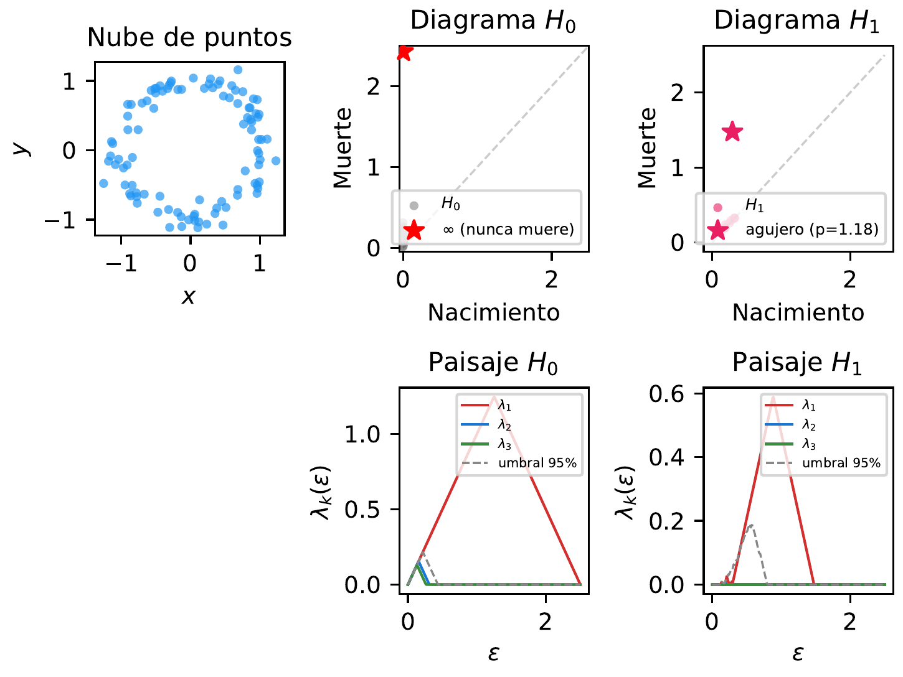
La propiedad más poderosa de estas características topológicas es su invarianza bajo deformaciones continuas: si estiramos, doblamos o retorcemos el anillo sin romperlo ni pegarlo, el agujero sigue ahí. La Figura 2.4 lo demuestra con tres formas distintas — un óvalo, un cuadrado y una curva aleatoria — que geométricamente no se parecen en nada, pero topológicamente son idénticas al círculo. En los tres casos, \(H_0\) muestra una sola componente (la estrella inmortal, \(\lambda_1\) por encima del umbral) y \(H_1\) muestra un único ciclo persistente dominante. La estadística clásica vería tres distribuciones muy distintas; la topología ve la misma forma.
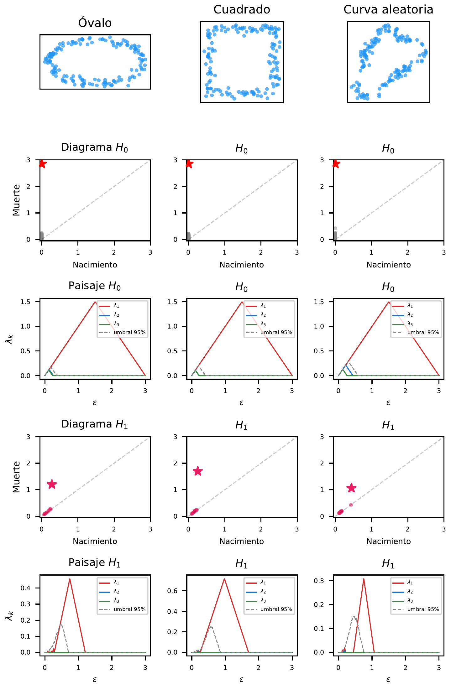
- Genera puntos sobre una elipse en lugar de un círculo (Receta 2). ¿Cambia la persistencia del agujero en \(H_1\)? ¿Por qué?
- ¿Qué ocurriría con \(H_1\) si generaras puntos sobre un «8» (dos círculos pegados)? ¿Cuántos agujeros persistentes esperarías?
2.3 Receta 3: Señal, ruido e invarianza
La Receta 2 nos mostró que el TDA detecta el agujero generado por un círculo. Pero ¿hasta qué punto resiste al ruido? ¿Y qué pasa si el círculo vive en un espacio de alta dimensión y está completamente deformado? Estas dos preguntas — estabilidad frente a perturbaciones e invarianza dimensional y topológica — son los pilares que hacen del TDA una herramienta realmente útil.
2.3.1 Estabilidad frente al ruido
Repitamos la Receta 2 pero ahora con niveles crecientes de ruido gaussiano (\(\sigma\)):
import numpy as np
from ripser import ripser
niveles = [0.05, 0.15, 0.3, 0.5]
for sigma in niveles:
np.random.seed(42)
theta = np.random.uniform(0, 2 * np.pi, 200)
ruido = np.random.normal(0, sigma, (200, 2))
xy = np.column_stack(
[np.cos(theta), np.sin(theta)])
puntos = xy + ruido
dgms = ripser(puntos, maxdim=1)["dgms"]
h1 = dgms[1]
if len(h1) > 0:
pers_h1 = h1[:, 1] - h1[:, 0]
else:
pers_h1 = [0]
print(f"σ = {sigma:.2f} → "
f"max H1 = {max(pers_h1):.3f}")El resultado muestra una degradación suave: con \(\sigma = 0.05\) la persistencia es alta (\(\approx 1.5\)), con \(\sigma = 0.3\) baja significativamente, y con \(\sigma = 0.5\) el agujero casi desaparece — el ruido es tan grande como el radio del círculo. Pero lo importante es que el cambio es gradual: un poco más de ruido produce un cambio proporcionalmente pequeño en el diagrama. Esta propiedad se formalizará como el teorema de estabilidad en Capítulo 5, y es la razón matemática por la que el TDA es robusto frente a perturbaciones.
La Figura 2.5 muestra el efecto con tres representaciones simultáneas. Arriba, las nubes de puntos con ruido creciente. En el centro, los diagramas de persistencia de \(H_1\): la estrella marca el agujero principal, que se acerca a la diagonal a medida que \(\sigma\) crece. Abajo, los paisajes de persistencia \(\lambda_1\): el pico dominante se aplana gradualmente, pero nunca desaparece de golpe. Comparemos con el umbral del 95% (línea discontinua): incluso con \(\sigma = 0.3\), el pico todavía supera el umbral — el agujero sigue siendo detectable estadísticamente.
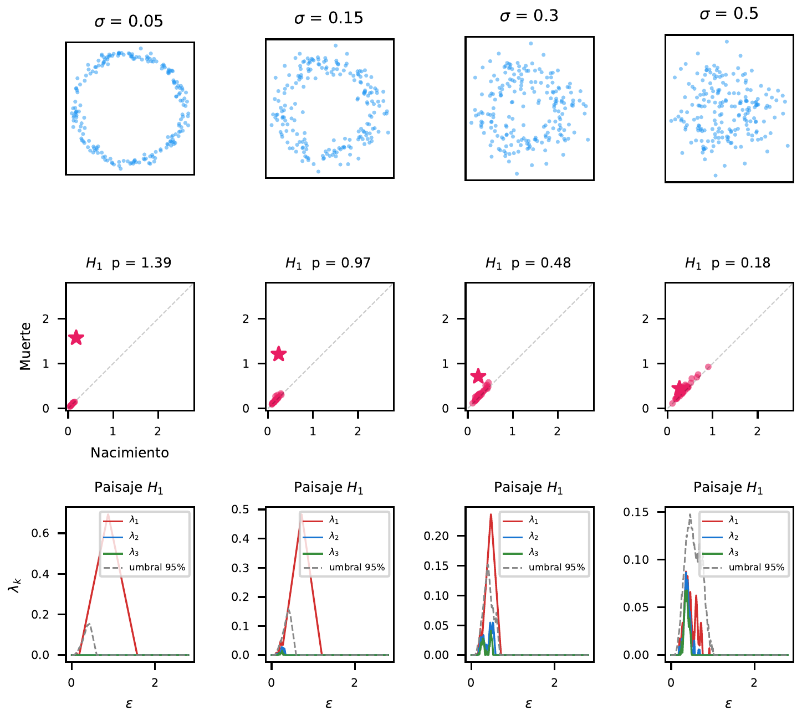
2.3.2 La maldición de la dimensionalidad
La estabilidad frente al ruido es solo la mitad de la historia. La otra mitad es cómo se comporta el TDA cuando los datos viven en espacios de alta dimensión, que es el caso habitual en la práctica: imágenes, genómica, texto — todo vive en cientos o miles de dimensiones.
Al crecer la dimensión \(d\), un fenómeno conocido como concentración de la medida hace que las distancias euclídeas entre puntos converjan a un mismo valor. Si tenemos un círculo de radio \(R\) con ruido gaussiano de desviación típica \(\sigma\) en las \(d\) coordenadas, la distancia típica entre dos puntos se aproxima a \(\sigma\sqrt{2d}\). Cuando \(\sigma\sqrt{2d}\) supera el diámetro del círculo (\(\sigma\sqrt{2d} \gtrsim 2R\)), el complejo de Vietoris-Rips no puede recuperar la estructura circular de forma fiable: la señal topológica se aproxima al nivel del ruido.
Para visualizarlo, generamos un círculo de radio \(R = 1.5\) embebido en \(\mathbb{R}^d\) con ruido gaussiano \(\sigma = 0.2\) en todas las coordenadas:
import numpy as np
from ripser import ripser
def generar_circulo_ruidoso(n=200, dim=2,
R=1.5, sigma=0.2, seed=42):
"""Círculo de radio R en ℝ^2, embebido en ℝ^dim."""
rng = np.random.default_rng(seed)
t = np.linspace(0, 2 * np.pi, n, endpoint=False)
pts = np.zeros((n, dim))
pts[:, 0] = R * np.cos(t)
pts[:, 1] = R * np.sin(t)
pts += rng.normal(0, sigma, (n, dim))
return pts
sigma = 0.2
for dim in [2, 8, 32, 128]:
pts = generar_circulo_ruidoso(dim=dim)
dgms = ripser(pts, maxdim=1)["dgms"]
h1 = dgms[1]
pers = (h1[:, 1] - h1[:, 0]).max() if len(h1) > 0 else 0
disp = sigma * (2 * dim) ** 0.5
print(f"ℝ^{dim} σ√(2d)={disp:.2f} H1={pers:.2f}")Con \(d = 2\), la dispersión de ruido es \(\sigma\sqrt{2d} \approx 0.57\), pequeña frente al diámetro \(2R = 3\): el TDA detecta el agujero con claridad. Con \(d = 128\) la dispersión alcanza \(\sigma\sqrt{2d} \approx 3.2\), comparable al diámetro: las distancias concentran alrededor de un valor y la señal topológica del círculo, aunque presente, se hace difícilmente distinguible del nivel de ruido.
La Figura 2.6 muestra el contraste. La primera fila proyecta los puntos en \((x_1, x_{d/2+1})\): en alta dimensión, \(x_{d/2+1}\) es ruido puro y el círculo desaparece. La segunda fila muestra la proyección PCA a 2D, que recupera el círculo en todos los casos. Las filas tercera y cuarta cuentan la historia del TDA: el diagrama \(H_1\) muestra cómo la estrella más persistente se acerca a la diagonal al crecer \(d\), y el paisaje \(\lambda_1\) refleja cómo la razón señal/ruido se degrada gradualmente — el umbral de la hipótesis nula (permutación de coordenadas) opera a la misma escala de distancias que los datos reales, de modo que en \(d = 128\) algunos picos de \(H_1\) quedan cerca o por debajo del umbral.
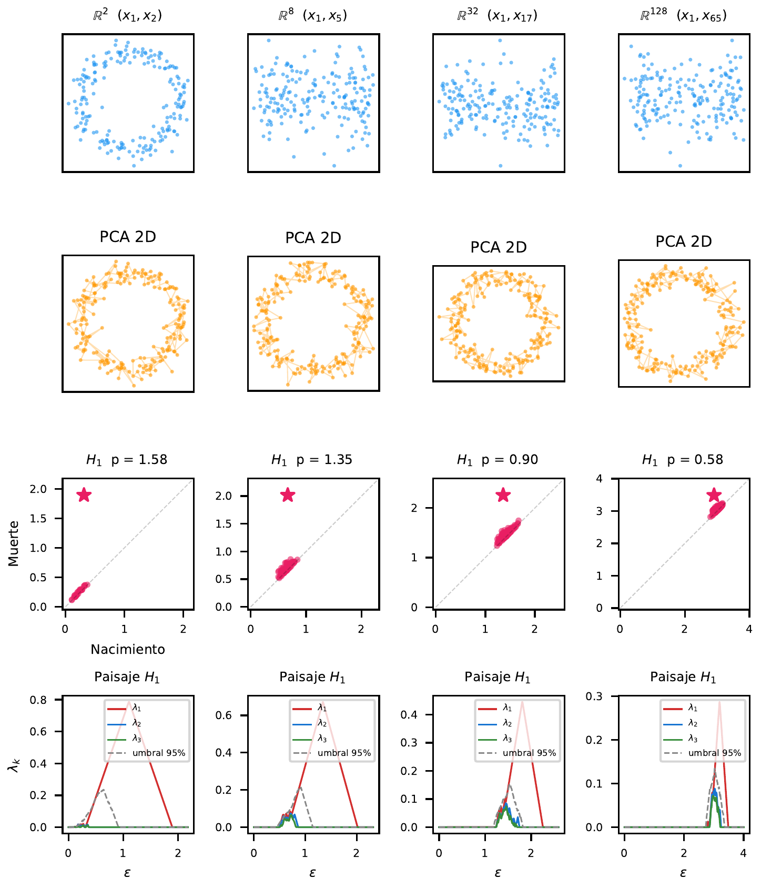
PCA funciona porque busca las proyecciones lineales de mayor varianza: en nuestro ejemplo, las dos primeras coordenadas concentran toda la señal en el plano \((x_1, x_2)\), que PCA recupera perfectamente. Nótese que éste es el escenario más favorable posible para PCA — en datos reales la señal suele repartirse entre muchas dimensiones correlacionadas. El TDA, en cambio, trabaja con distancias euclídeas; al crecer \(d\), las distancias convergen hacia un mismo valor y la señal topológica queda enterrada en las fluctuaciones del ruido. Esta asimetría motiva el preprocesado con UMAP antes de aplicar TDA en alta dimensión, como veremos en la Receta 7.
Las tres primeras recetas nos han dado las herramientas conceptuales básicas: \(H_0\) para contar componentes, \(H_1\) para detectar agujeros, la persistencia para distinguir señal de ruido, y los límites del TDA en alta dimensión. Pero queda una pregunta natural: si detectamos un agujero, ¿podemos saber dónde está? ¿Cuáles son los puntos concretos que lo forman?
- En la Figura 2.5, ¿a partir de qué \(\sigma\) el paisaje de \(H_1\) deja de superar el umbral del 95%? ¿Qué relación tiene ese \(\sigma\) con el radio del círculo?
- En la Figura 2.6, PCA recupera el círculo en todas las dimensiones mientras la señal del TDA se degrada gradualmente hasta volverse difícilmente distinguible del ruido en \(d = 128\). ¿Por qué afecta la maldición de la dimensionalidad al TDA más que al PCA? ¿En qué sentido es éste un escenario favorable para PCA?
2.4 Receta 4: Ciclos representativos
Hasta ahora hemos detectado agujeros, pero no hemos respondido a la pregunta más natural: ¿dónde está el agujero? ¿Cuáles son los puntos y aristas concretos que lo forman? Esto es el problema inverso del TDA: dado un generador de homología, encontrar un ciclo representativo — una cadena cerrada de aristas que delimita la característica topológica detectada.
La librería GUDHI resuelve este problema con la función flag_persistence_generators(): para cada característica persistente en \(H_1\) devuelve la arista de nacimiento — la arista cuya inserción en la filtración creó el ciclo. ¿Por qué esto es suficiente? Porque si la arista \((u, v)\) crea un ciclo al ser insertada, es que ya existía un camino de \(u\) a \(v\) formado por aristas anteriores. Ese camino, más la arista de nacimiento, forma el ciclo completo.
Reutilicemos el anillo de la Receta 2:
import numpy as np
import gudhi
import networkx as nx
np.random.seed(42)
theta = np.random.uniform(0, 2 * np.pi, 100)
ruido = np.random.normal(0, 0.1, (100, 2))
puntos = np.column_stack(
[np.cos(theta), np.sin(theta)]) + ruido
# Construir el complejo de Rips con GUDHI
rips = gudhi.RipsComplex(
points=puntos, max_edge_length=2.5)
st = rips.create_simplex_tree(max_dimension=2)
st.compute_persistence(homology_coeff_field=2)Ahora extraemos los generadores de \(H_1\). Cada fila contiene cuatro vértices: los dos de la arista de nacimiento y los dos de la arista de muerte:
gens = st.flag_persistence_generators()
h1_gens = gens[1][0] # shape (m, 4)
# Fila más persistente (primera):
u, v = int(h1_gens[0, 0]), int(h1_gens[0, 1])
birth_scale = st.filtration([u, v])
print(f"Arista de nacimiento: ({u}, {v}) "
f"a escala {birth_scale:.4f}")Para reconstruir el ciclo completo, buscamos el camino más corto de \(u\) a \(v\) usando solo aristas insertadas antes de la arista de nacimiento:
# Grafo con aristas anteriores a la de nacimiento
G = nx.Graph()
for simplex, filt in st.get_filtration():
if len(simplex) == 2 and filt < birth_scale:
G.add_edge(simplex[0], simplex[1])
ciclo = nx.shortest_path(G, u, v)
print(f"Ciclo: {len(ciclo)} vértices")El resultado es un camino cerrado de 28 vértices que recorre el anillo, cubriendo 350° de arco angular — exactamente la cadena de puntos que encierra el agujero central. Al visualizarlo sobre la nube de puntos (en rojo sobre la Figura 2.7), vemos un polígono cerrado que delimita la región vacía.
El coste computacional tiene dos fases. La primera — construir el árbol de símplices y calcular la persistencia — es el mismo \(O(n^3)\) de las recetas anteriores. La segunda — reconstruir el ciclo — es comparativamente barata: construir el subgrafo de aristas anteriores al nacimiento es \(O(|E|)\) donde \(|E|\) es el número de aristas del complejo, y el camino más corto en el grafo (BFS) es \(O(n + |E|)\). Para 100 puntos, ambas fases son instantáneas.
¿Por qué importa esto? Porque en aplicaciones reales — redes neuronales, expresión génica, finanzas — detectar que «hay un ciclo» es solo el primer paso. Lo que el investigador necesita saber es cuáles son los genes, neuronas o activos concretos que forman ese ciclo. El ciclo representativo proporciona exactamente esa información: convierte una abstracción topológica en una lista concreta de entidades del dominio.

La limitación principal es que el ciclo representativo no es único: pueden existir múltiples ciclos homólogos (topológicamente equivalentes) que encierran el mismo agujero. Nuestra reconstrucción devuelve el más corto en número de aristas a la escala de nacimiento, pero hay otros algoritmos que buscan el ciclo óptimo según distintos criterios (mínima longitud geométrica, mínima área encerrada). En la práctica, el camino más corto es suficiente para localizar la región de interés.
Con esta receta completamos la caja de herramientas básica de la homología persistente: sabemos contar componentes (\(H_0\)), detectar agujeros (\(H_1\)), distinguir señal de ruido (persistencia), trabajar en alta dimensión (invarianza), y ahora localizar las características detectadas (ciclos representativos). Antes de pasar a datos reales, nos queda una herramienta complementaria: el algoritmo Mapper, que produce grafos directamente interpretables en lugar de diagramas abstractos.
- Modifica el código para extraer los ciclos representativos de los dos ciclos más persistentes en \(H_1\) de una nube con dos anillos concéntricos. ¿Se solapan los puntos?
- Pídele a un LLM: «¿Cuál es la diferencia entre un cociclo representativo y un ciclo representativo en homología persistente? ¿Por qué ripser devuelve cociclos?»
2.5 Receta 5: Mapper y el viaje del héroe
En 1949, Joseph Campbell publicó El héroe de las mil caras, donde argumentó que todas las grandes historias siguen un patrón circular: el protagonista parte de casa, se enfrenta a pruebas, y regresa transformado. Si Campbell tiene razón, la forma de una novela debería ser un bucle — y con la herramienta adecuada, deberíamos poder verlo directamente.
El algoritmo Mapper es esa herramienta. A diferencia de la homología persistente — que resume la forma en diagramas abstractos — Mapper construye un grafo simplificado que es topológicamente equivalente y que podemos inspeccionar visualmente. Su funcionamiento es intuitivo:
- Función lente (lens): Elegimos una función que proyecta los datos a un espacio de baja dimensión. Mapper usa esta proyección para organizar el cubrimiento.
- Cubrimiento con solapamiento: Dividimos el rango de la lente en intervalos que se solapan. Cada intervalo contiene un subconjunto de los datos.
- Clustering local: Dentro de cada intervalo, agrupamos los puntos por similitud (DBSCAN, por ejemplo).
- Conexión: Dos clusters de intervalos adyacentes se conectan con una arista si comparten puntos (los del solapamiento).
DBSCAN agrupa puntos que forman regiones densas sin pedir de antemano cuántos clusters hay. En Mapper lo usamos dentro de cada parche del cubrimiento: la lente decide qué puntos entran en el parche, y DBSCAN decide si esos puntos forman uno o varios nodos del grafo.
La idea tiene dos parámetros de densidad y una elección de distancia. eps es el radio de vecindad: dos puntos son vecinos si están a una distancia menor que ese radio, medida con la métrica elegida. min_samples es el número mínimo de vecinos para considerar que una zona es densa. En embeddings de texto, por ejemplo, usar distancia euclídea o distancia coseno cambia qué significa «estar cerca». El algoritmo recorre los puntos, marca como núcleo los que tienen suficientes vecinos, fusiona los núcleos conectados entre sí, añade como frontera los puntos cercanos a algún núcleo, y deja como ruido los puntos aislados.
Su fortaleza es que no exige predeterminar el número de clusters, detecta formas irregulares y puede dejar fuera observaciones aisladas. Su debilidad es que depende de la escala: un eps demasiado pequeño fragmenta el parche, y uno demasiado grande lo fusiona todo. Además, como todo método basado en distancias, sufre en alta dimensión cuando las distancias pierden contraste. Por eso, en Mapper, el espacio donde se aplica DBSCAN importa tanto como la lente: la lente organiza el cubrimiento, pero DBSCAN necesita una métrica donde vecino y no vecino sigan siendo distinguibles.
El grafo resultante captura la «forma» de los datos: nodos son grupos de puntos similares, y las aristas reflejan solapamiento entre grupos vecinos. La elección de la función lente es crucial — volveremos a ella después de explicar cómo convertir texto en datos numéricos.
Para aplicar Mapper a texto necesitamos convertir una novela — un flujo continuo de palabras — en una nube de puntos. El proceso tiene dos pasos: chunking y embedding.
El chunking consiste en dividir el texto en ventanas solapadas de tamaño fijo. Usamos ventanas de 500 palabras con un solapamiento del 50% (avance de 250 palabras). Cada ventana captura aproximadamente una «escena» narrativa — suficiente contexto para que el significado sea coherente, pero no tanto como para mezclar temas distintos. El solapamiento garantiza que no perdemos transiciones entre escenas: cada punto de la narración aparece en al menos dos ventanas consecutivas.
El embedding transforma cada ventana de texto en un vector numérico. Usamos el modelo all-MiniLM-L6-v2 de la biblioteca sentence-transformers: una red neuronal entrenada para colocar textos semánticamente similares en puntos cercanos del espacio vectorial. El resultado es un vector de 384 dimensiones por cada ventana — el espacio ambiente en el que trabajamos. Para una novela típica de 125.000 palabras, esto produce unos 500 puntos en \(\mathbb{R}^{384}\).
¿Por qué 384 dimensiones? Es el tamaño que eligieron los diseñadores del modelo para equilibrar expresividad y eficiencia. Pero la dimensionalidad intrínseca del lenguaje — el número de grados de libertad reales que necesita la semántica — es mucho menor. Investigaciones recientes estiman que los embeddings de texto viven en variedades de entre 5 y 20 dimensiones efectivas, dependiendo de la tarea y el corpus. Es precisamente esta discrepancia entre la dimensionalidad ambiente (384) y la intrínseca (~10–20) lo que hace que TDA funcione: los datos forman una variedad de baja dimensión con topología no trivial — bucles, huecos, ramificaciones — que las técnicas que hemos visto pueden detectar.
2.5.1 La elección de la lente
Ahora que sabemos que cada novela es una nube de puntos en \(\mathbb{R}^{384}\), queda la pregunta crítica: ¿qué función lente usar en Mapper?
Una primera intuición sería usar la posición narrativa (del 0% al 100%): dividir la novela en franjas temporales y agrupar los pasajes de cada franja por similitud. Con una lente temporal, una cadena lineal indicaría una narrativa sin retorno, y un bucle indicaría que el final se parece al principio. Sin embargo, esta elección tiene un problema fundamental: la lente temporal fuerza una topología casi lineal. Si los intervalos cubren franjas de tiempo, los clusters de franjas no adyacentes raramente comparten puntos (el solapamiento solo ocurre entre intervalos contiguos), produciendo necesariamente una cadena — independientemente de si la historia es circular o no. La lente temporal asume la estructura que queremos detectar.
La alternativa es usar una lente semántica: las dos primeras componentes principales (PCA) de los embeddings. Esta lente agrupa los pasajes por significado, no por orden temporal. Si el final de una novela se parece semánticamente al principio, ambos caerán en los mismos intervalos de la lente PCA y acabarán en los mismos clusters — creando aristas entre nodos «tempranos» y «tardíos». Con una lente PCA, el grafo refleja la estructura semántica real de la narrativa, y cualquier circularidad detectada es genuina.
Hemos descargado nueve novelas clásicas de Project Gutenberg (todas de dominio público) y aplicado este proceso de chunking + embedding. Los resultados pre-calculados están en code/tda/data/hero_books.npz.
import numpy as np
import kmapper as km
from sklearn.decomposition import PCA
from sklearn.cluster import DBSCAN
data = np.load("code/tda/data/hero_books.npz",
allow_pickle=True)
embeddings = data["embeddings"] # (6147, 384)
positions = data["positions"] # posición narrativa [0, 1]
book_ids = data["book_ids"] # índice del libro
book_names = [str(n) for n in data["book_names"]]Aplicamos Mapper a cada novela con dos reducciones independientes: una PCA 2D para la lente (que organiza la cuadrícula de cobertura) y una PCA 20D para el clustering. Los 20 componentes cubren el rango medio de la dimensión intrínseca estimada de los embeddings de frases (~10–30 dimensiones), con un coeficiente de variación de distancias euclídeas del ~32% que hace a DBSCAN discriminativo; si usáramos distancia euclídea directamente sobre los 384 componentes originales, todas las distancias se concentrarían alrededor del mismo valor y DBSCAN no podría distinguir vecinos de no-vecinos:
mapper = km.KeplerMapper(verbose=0)
for i, name in enumerate(book_names):
mask = book_ids == i
emb = embeddings[mask]
pos = positions[mask]
# Lente semántica: PCA 2D independiente
# (organiza la cuadrícula de cobertura Mapper)
lens = PCA(n_components=2).fit_transform(emb)
# Clustering: PCA 20D independiente
# (rango medio de dimensión intrínseca, CV ~32%)
emb_clust = PCA(n_components=20).fit_transform(emb)
# Construir el grafo Mapper
graph = mapper.map(
lens, emb_clust,
cover=km.Cover(n_cubes=7,
perc_overlap=0.35),
clusterer=DBSCAN(eps=1.5,
min_samples=3))
n_nodes = len(graph["nodes"])
n_edges = sum(
len(v) for v in graph["links"].values())
print(f" {name:20s} "
f"nodos={n_nodes}, aristas={n_edges}")El resultado produce grafos con entre 32 y 45 nodos para todas las novelas. Cada nodo es un cluster de pasajes temáticamente similares, y cada arista indica solapamiento entre clusters — puntos que pertenecen a más de un cluster gracias al solapamiento de la cubierta. Los grafos son tan densos que la mera presencia de ciclos no indica nada — la circularidad es un artefacto combinatorio de la densidad, no una firma narrativa.
2.5.2 El retorno como distancia en el grafo
Para validar la hipótesis de Campbell necesitamos una pregunta más precisa: ¿es el final de la novela semánticamente cercano al principio? Concretamente, si Campbell tiene razón, el camino de vuelta — del último nodo al primero a través de las aristas semánticas del grafo — debería ser corto comparado con el viaje total.
Definimos la métrica \(d/\text{trav}\):
- \(d\) = distancia (camino más corto) entre el nodo inicial y el final en el grafo Mapper.
- \(\text{trav}\) = suma de distancias entre nodos consecutivos en orden cronológico — el «coste del viaje».
- \(d/\text{trav}\) = coste relativo del retorno. Si Campbell tiene razón, este ratio debería ser anormalmente bajo.
Para evaluar «anormalmente bajo», usamos un test de desplazamiento cíclico: imaginamos que la narrativa es un ciclo (el final conecta con el principio) y probamos todos los posibles puntos de corte. Si cortamos entre los nodos \(i\) e \(i{+}1\), el nuevo «principio» es el nodo \(i{+}1\) y el nuevo «final» es el nodo \(i\). Esto nos da \(k{-}1\) ratios nulos contra los que comparar el real.
La Figura 2.8 visualiza los resultados con un hipergrafo en espiral: cada nodo se coloca en una espiral que avanza con la narrativa (del centro hacia fuera), las aristas grises son las conexiones semánticas del Mapper, las flechas azules marcan el recorrido cronológico, y las flechas rojas muestran el camino de retorno — la ruta más corta por el grafo semántico desde el final hasta el principio. El color indica la posición narrativa: rojo (inicio) \(\to\) naranja \(\to\) verde \(\to\) azul oscuro (final).

Los resultados del test cíclico son contundentes:
| Novela | \(|V|\) | \(d\) | trav | \(d/\text{trav}\) | \(\mu_{\text{nulo}}\) | \(p\) |
|---|---|---|---|---|---|---|
| Odisea | 43 | 5 | 92 | 0.054 | 0.024 | 1.000 |
| Beowulf | 32 | — | 181 | — | 0.032 | 1.000 |
| Divina Comedia | 35 | 5 | 70 | 0.071 | 0.029 | 0.971 |
| Don Quijote | 43 | 5 | 96 | 0.052 | 0.024 | 1.000 |
| Moby Dick | 44 | 6 | 117 | 0.051 | 0.023 | 1.000 |
| Monte Cristo | 45 | 5 | 85 | 0.059 | 0.023 | 0.955 |
| Mago de Oz | 33 | 5 | 106 | 0.047 | 0.031 | 0.938 |
| Vuelta al mundo | 43 | 5 | 91 | 0.055 | 0.024 | 1.000 |
| Princesa de Marte | 42 | 3 | 91 | 0.033 | 0.024 | 0.902 |
El valor \(p \approx 1.0\) para todas las novelas significa exactamente lo contrario de lo que predice Campbell: el principio y el final de una novela están más lejos semánticamente que dos puntos consecutivos cualesquiera. ¿Por qué? Porque los nodos cronológicamente adyacentes tienden a estar a distancia 1–2 en el grafo semántico — el texto cambia gradualmente. Pero el inicio y el final son los extremos narrativos: los autores abren y cierran con tonos, vocabularios y contextos deliberadamente distintos. En el caso extremo de Beowulf, el grafo es directamente disconexo entre el nodo inicial y el final: no existe ningún camino semántico que los conecte, el caso más alejado posible de la predicción de Campbell.
2.5.3 Un resultado negativo honesto
Este análisis no valida la hipótesis de Campbell. Un contraargumento natural sería: «quizá el retorno no es semántico sino geográfico — el héroe vuelve al mismo lugar, no al mismo tema». Lo hemos comprobado: filtrando solo los pasajes que mencionan localizaciones geográficas (detectadas con reconocimiento de entidades: ciudades, países, regiones) y repitiendo el análisis completo, los resultados son indistinguibles — \(d/\text{trav}\) no mejora en ninguna novela.
La conclusión es directa: la teoría del monomito, al menos operacionalizada como proximidad en el espacio de embeddings — ya sea de texto completo o filtrado por localizaciones — no produce una señal detectable. Esto se alinea con décadas de críticas a Campbell: la circularidad que describe es tan flexible que puede proyectarse sobre casi cualquier narrativa a posteriori, pero no genera predicciones falsificables cuando se formaliza. El TDA nos da la herramienta rigurosa para cuantificar la forma de una narración — y esa herramienta nos dice que las novelas no son circulares.
La ventaja de Mapper frente a la homología persistente pura es la interpretabilidad directa: no necesitamos interpretar un diagrama abstracto — podemos ver la forma de la historia en el hipergrafo. Cada nodo corresponde a un grupo de pasajes temáticamente similares, y cada arista indica proximidad semántica. La espiral revela simultáneamente la estructura temporal (posición) y la estructura semántica (conexiones), haciendo explícito por qué el retorno no funciona: las flechas rojas cruzan casi todo el grafo.
La limitación es que Mapper depende de parámetros — número de intervalos, porcentaje de solapamiento, algoritmo de clustering — y el grafo resultante puede cambiar con estos ajustes. En la práctica, si la estructura es robusta (como un viaje del héroe claro), aparece para un rango amplio de parámetros.
- Si usaras la posición narrativa (tiempo) como lente en lugar de PCA, ¿qué topología esperarías en el grafo Mapper? ¿Por qué esa elección de lente no puede detectar circularidad?
- Modifica los parámetros de Mapper (
n_cubes,perc_overlap) y observa cómo cambia el grafo para La Odisea. ¿A partir de qué parámetros se reduce \(\beta_1\) a cero? ¿Es la densidad del grafo robusta o un artefacto de la configuración? - El test cíclico muestra que el inicio y el final de las novelas están más lejos que la media. Diseña un test alternativo: en lugar de \(d/\text{trav}\), usa la similitud coseno directa entre el embedding medio del primer y último chunk. ¿Cambia la conclusión?
- Pídele a un LLM: «¿Cuáles son las principales críticas académicas a la teoría del monomito de Joseph Campbell?» Compara con nuestro resultado cuantitativo.
2.6 Receta 6: El árbol de la ciencia
¿Tienen las disciplinas científicas fronteras topológicas reales — vacíos en el espacio semántico que ningún investigador atraviesa — o son simplemente zonas densas de una misma variedad continua? La pregunta no es retórica: si la ciencia es un único continente, los campos «alejados» como biología computacional y física de altas energías deberían estar conectados por puentes de papers interdisciplinares sin ningún vacío significativo. Si hay islas, existirían comunidades que hablan lenguajes distintos sin vocabulario compartido con ningún intermedio.
Para responderla con rigor, descargamos 8.085 artículos de arXiv en 2025 usando muestreo estratificado proporcional: asignamos un presupuesto de 10.000 extracciones a 29 categorías en proporción a su volumen de publicación ese año — las 29 categorías suman aproximadamente 200.000 envíos en 2025, así que el corpus resultante de 8.085 artículos representa en torno al 4% de la producción disponible. Los datos pre-calculados están en code/tda/data/arxiv_ciencia.npz.
El corpus cubre siete campos macro: Informática (3,181 papers), Física (2,455), Matemáticas (978), Estadística (432), Biología (432), Economía (283) y Otros (324).
Cargamos los datos y aplicamos una reducción dimensional previa. Los embeddings viven en \(\mathbb{R}^{384}\), pero como vimos en la sección de limitaciones, a esa dimensionalidad las distancias euclídeas se concentran — todos los pares de puntos quedan a una distancia similar — y ripser pierde resolución para distinguir separaciones reales de ruido. Reducir a 50 componentes principales conserva el 58% de la varianza explicada — suficiente para preservar las diferencias semánticas entre disciplinas — mientras recupera la discriminación geométrica necesaria para ripser:
import numpy as np
from sklearn.decomposition import PCA
data = np.load("code/tda/data/arxiv_ciencia.npz",
allow_pickle=True)
emb = data["embeddings"] # (8085, 384)
titles = data["titles"]
cats = data["categories"] # e.g. "cs.LG"
# MACRO_FIELD asigna cada categoría a su campo macro
# (definido en diagrama_ciencia.py)
fields = np.array([MACRO_FIELD.get(c, "Otros") for c in cats])
emb_red = PCA(
n_components=50, random_state=42
).fit_transform(emb)2.6.1 ¿Cuáles son las ramas de la ciencia?
La pregunta más directa que puede hacerse sobre el corpus es cuántas ramas independientes tiene la ciencia: ¿hay una sola variedad continua, o existen comunidades topológicamente aisladas — islas — que no comparten puentes con el resto? Para responderla necesitamos dos pasos: medir la separación geométrica entre los campos (para saber si hay candidatos a islas) y luego aplicar la prueba topológica (para saber si esa separación supera el umbral estadístico del ruido).
Comprobamos primero las distancias geométricas entre los centroides de cada campo en el espacio de embeddings:
field_names = list(np.unique(fields))
centroids = {f: emb_red[fields == f].mean(axis=0)
for f in field_names}
print("Distancias entre centroides:")
for i, f1 in enumerate(field_names):
for f2 in field_names[i+1:]:
d = np.linalg.norm(centroids[f1] - centroids[f2])
print(f" {f1} – {f2}: {d:.4f}")Las distancias van de 0.31 (Informática–Estadística, los más cercanos) a 0.60 (Física–Biología, los más lejanos). Hay separación geométrica real entre disciplinas, lo que abre la posibilidad de que existan varias ramas. La pregunta topológica es si esa separación supera el umbral del ruido: si lo supera, hay más de una rama; si no, la ciencia es un único continente conectado.
Calculamos \(H_0\) con ripser sobre el corpus reducido y estimamos el umbral de significación al 95% por bootstrap (200 permutaciones de 500 puntos aleatorios uniformes en el bounding-box; el protocolo completo se desarrollará en la Sección 5.2.1):
from ripser import ripser
dgms = ripser(emb_red, maxdim=0)["dgms"]
h0 = dgms[0]
rng = np.random.default_rng(42)
low, high = emb_red.min(axis=0), emb_red.max(axis=0)
null_max = []
for _ in range(200):
pts = rng.uniform(low, high, size=(500, emb_red.shape[1]))
h = ripser(pts, maxdim=0)["dgms"][0]
fin = h[np.isfinite(h[:, 1])]
pers = fin[:, 1] - fin[:, 0]
null_max.append(pers.max() if len(fin) else 0)
thresh = np.percentile(null_max, 95)
finite_h0 = h0[np.isfinite(h0[:, 1])]
pers_h0 = finite_h0[:, 1] - finite_h0[:, 0]
N_RAMAS = int((pers_h0 > thresh).sum()) + 1
print(f"Umbral 95% = {thresh:.4f}")
print(f"Barra más larga = {pers_h0.max():.4f}")
print(f"N_RAMAS = {N_RAMAS}")El resultado es contundente: N_RAMAS = 1. El umbral bootstrap al 95% se sitúa en 1.67; la barra \(H_0\) más larga apenas alcanza 0.70 — solo el 42% del umbral. Aunque las disciplinas están geométricamente separadas, la brecha más profunda entre cualquier par de campos es menos de la mitad de lo que sería necesario para constituir una isla topológicamente significativa.
La interpretación es precisa: existe siempre un camino continuo de papers a través del espacio semántico que conecta cualquier par de disciplinas sin cruzar un vacío estadísticamente significativo. Informática y Física no son islas; son regiones densas de una misma variedad continua, unidas por papers de física computacional, simulación cuántica y aprendizaje automático para materia condensada.
La Figura 2.9 muestra el resultado. El diagrama de persistencia \(H_0\) (izquierda) concentra todos los puntos cerca de la diagonal — ninguna barra supera el umbral nulo (línea discontinua). El paisaje \(\lambda_1\) (derecha) se queda por debajo del umbral en todo el rango. Compárese con la Receta 1 (tres islas separadas): allí \(\lambda_1\) superaba claramente la línea nula. Aquí, la ciencia es un continuo.
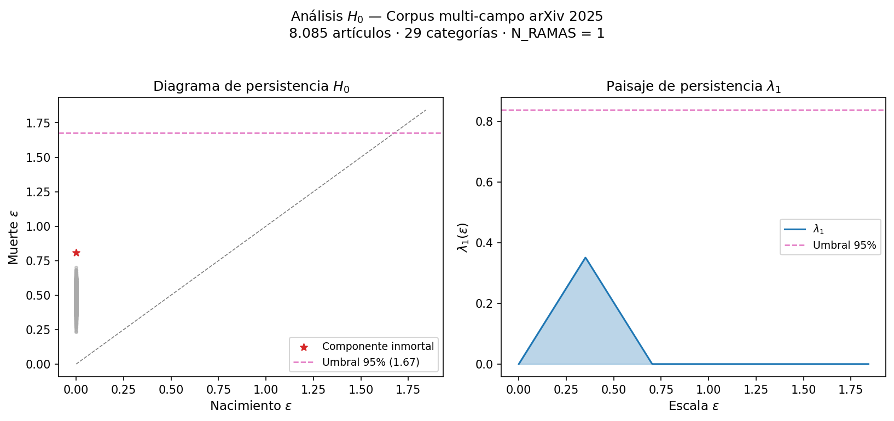
El clustering de enlace simple es la única variante jerárquica que reproduce exactamente las componentes conexas de la filtración de Vietoris-Rips. Otras variantes — Ward, enlace completo, enlace promedio — producen dendrogramas distintos y no tienen interpretación topológica directa en términos de \(H_0\).
2.6.2 ¿Cómo se organizan las disciplinas en el espacio semántico?
El resultado \(H_0 = 1\) no dice que la ciencia sea homogénea; dice que está conectada. La pregunta siguiente es visual y estructural: ¿cómo se distribuyen los campos en el espacio semántico? ¿Hay regiones claramente separadas, o todo se mezcla?
Para este corpus en concreto, una lente PCA 1D capturaría el eje de máxima varianza: el gradiente entre campos formalmente simbólicos — matemáticas puras, física teórica, cargados de símbolos y demostraciones — en un extremo, y campos empírico-estadísticos — biología, economía, ciencias de datos, con vocabulario experimental y probabilístico — en el otro. El Mapper resultante tiene exactamente 10 nodos y 9 aristas — la definición de un árbol (\(N\) nodos, \(N-1\) aristas, sin ciclos). El tronco matemático-físico puede bifurcarse en álgebra abstracta y física computacional, pero las conexiones transversales quedan invisibles: los papers de aprendizaje automático estadístico, que mezclan vocabularios de CS y estadística, caen en puntos muy distintos del eje PC1; como sus intervalos de cubierta no se solapan en esa única dimensión, no crean ninguna arista entre esas dos regiones. Con la lente PCA 2D, la segunda componente principal añade un eje que separa aproximadamente ciencias de la vida de ciencias físicas y computacionales: ahora un parche puede solaparse con vecinos tanto en la dirección PC1 como en PC2, y esas conexiones transversales se materializan como aristas en el grafo. El resultado — 88 nodos y 296 aristas — incluye ciclos que reflejan la verdadera red interdisciplinar.
La Figura 2.10 muestra ambos grafos lado a lado con la misma paleta de campos. La diferencia es visual e inmediata: el panel izquierdo (lente 1D) es una cadena con alguna bifurcación; el panel derecho (lente 2D) es una red densa con múltiples ciclos.

import kmapper as km
from sklearn.cluster import DBSCAN
# Lente: PCA 2D independiente
# (organiza la cuadrícula de cobertura)
lens = PCA(
n_components=2, random_state=42
).fit_transform(emb)
# Clustering: PCA 20D independiente
# (dimensión intrínseca ~10-30D, CV de distancias ~32%)
emb_clust = PCA(
n_components=20, random_state=42
).fit_transform(emb)
mapper = km.KeplerMapper(verbose=0)
graph = mapper.map(
lens, emb_clust,
cover=km.Cover(n_cubes=10, perc_overlap=0.4),
clusterer=DBSCAN(eps=2.0, min_samples=3),
)
n_nodes = len(graph["nodes"])
n_edges = sum(len(v) for v in graph["links"].values())
print(f"Mapper: {n_nodes} nodos, {n_edges} aristas")El resultado son 88 nodos y 296 aristas — un grafo 2D con ciclos y ramificaciones, muy distinto de la cadena que habría producido una lente 1D. Cada nodo es un cluster de papers temáticamente similares dentro de un parche de la cuadrícula PCA; cada arista indica que dos clusters comparten papers en la zona de solapamiento. Los nodos coloreados por campo revelan la geografía del corpus: Informática y Física ocupan regiones densas en el centro; Matemáticas y Estadística forman una franja intermedia; Biología y Economía aparecen en las periferias. Los nodos con sectores de varios colores son los puentes interdisciplinares: papers que caen en la frontera entre regiones y que conectan vocabularios de dos o más disciplinas.
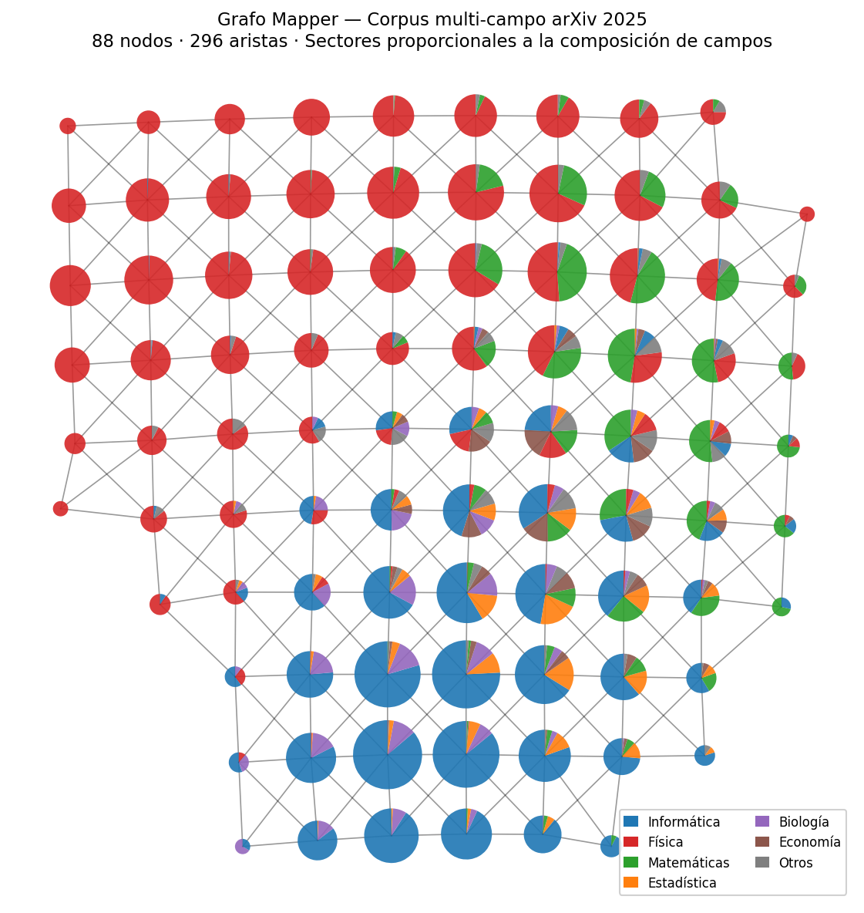
2.6.3 Implicaciones para el científico
Este resultado tiene una consecuencia directa para quien investiga o innova en cualquier campo. Si la ciencia es una única variedad continua, la pregunta no es «¿a qué isla pertenece mi idea?» sino «¿en qué región del continente estoy, y cuáles son las zonas adyacentes menos exploradas?». Los nodos periféricos del Mapper — los puentes inter-campo — señalan exactamente esas zonas: papers que ya han cruzado la frontera disciplinar y que abren caminos hacia vocabularios y técnicas del campo vecino.
El mismo flujo de trabajo — colección estratificada, \(H_0\) con bootstrap, Mapper con lente PCA 2D — se puede ejecutar sobre cualquier subconjunto del corpus para preguntarle cosas más específicas: «¿es el subcampo de simulación cuántica una isla dentro de Física, o está conectado con informática?»; «¿qué papers conectan econometría con estadística bayesiana?». El código completo está en code/tda/diagrama_ciencia.py.
- El análisis produce N_RAMAS = 1 al 95% de confianza sobre 29 categorías de arXiv 2025. ¿Cambiaría el resultado si incluimos solo las 5 categorías más grandes (cs.LG, cs.CV, cs.CL, quant-ph, hep-th)? ¿Por qué?
- La barra \(H_0\) más larga tiene persistencia 0.70 — el 42% del umbral 1.67. Interpreta este valor: ¿qué par de disciplinas produce esa barra? ¿Qué tipo de papers formarían el «puente mínimo» que las une?
- El grafo Mapper con lente PCA 1D produce un árbol (10 nodos, 9 aristas, sin ciclos). ¿Qué implicaría para la estructura del conocimiento científico que hubiera un ciclo en el grafo Mapper? ¿Qué tipo de papers formarían ese ciclo?
- El análisis ripser muestra \(\beta_1 = 0\): no existe ningún ciclo \(H_1\) estadísticamente significativo en el corpus arXiv. Si, hipotéticamente, hubiera aparecido uno por encima del umbral, ¿qué significaría extraer su ciclo representativo (véase la Receta 4)? ¿Qué disciplinas o subcampos esperarías que formasen ese bucle semántico?
2.7 Receta 7: UMAP y la reducción topológica
En las recetas anteriores hemos trabajado con datos de baja dimensión (Recetas 1–4) o hemos reducido previamente con PCA (Recetas 5–6). La reducción no es opcional: en dimensiones altas, las distancias euclídeas se concentran y la filtración de Vietoris-Rips pierde resolución (véase Capítulo 4 para los detalles). PCA es la opción más común, pero es una transformación lineal — proyecta sobre el subespacio de máxima varianza sin considerar la estructura topológica de los datos. ¿Qué ocurre si los datos tienen una forma intrínsecamente no lineal incrustada en alta dimensión?
Esta receta usa un objeto cuya topología conocemos a priori — un toro con \(\beta_1 = 2\) — para comparar PCA y UMAP como pasos de reducción dimensional antes de aplicar homología persistente. Con la respuesta correcta conocida de antemano, podemos evaluar el protocolo de validación de Sección 5.8 en condiciones de control: si UMAP supera el protocolo y PCA falla, tenemos evidencia de que el protocolo discrimina correctamente entre una reducción fiel y una infiel.
Un toro (la superficie de un donut) es el ejemplo perfecto: su topología tiene dos ciclos independientes — uno «alrededor del agujero» y otro «a través del tubo» — que se manifiestan como un rango 2 en \(H_1\), o en otras palabras, un número de Betti \(\beta_1=2\). Si generamos 1.000 puntos sobre un toro y los incrustamos en \(\mathbb{R}^{50}\) mediante una transformación no lineal aleatoria — concretamente, \(\mathbf{p} = \sin(\mathbf{x}_{3D} \cdot W + \phi)\) donde \(W\) es una matriz aleatoria — la pregunta es: ¿qué método de reducción dimensional preserva mejor estos dos ciclos? La no linealidad es esencial: con una simple rotación ortogonal, PCA podría invertirla exactamente y recuperar ambos ciclos sin dificultad. Al usar una transformación no lineal, bloqueamos esa salida fácil y ponemos a prueba la capacidad real de cada método para navegar una variedad deformada.
Primero generamos un toro tridimensional con radios \(R=2\) y \(r=1\) — una proporción 2:1 que hace que los dos ciclos sean comparables en tamaño — y lo incrustamos en \(\mathbb{R}^{50}\) con la transformación no lineal descrita:
import numpy as np
def generar_toro(n=1000, R=2.0, r=1.0,
dim_ambiente=50, ruido=0.08, seed=42):
"""Toro ruidoso incrustado en R^dim_ambiente."""
rng = np.random.default_rng(seed)
theta = rng.uniform(0, 2 * np.pi, n) # ciclo mayor
phi = rng.uniform(0, 2 * np.pi, n) # ciclo menor
x = (R + r * np.cos(phi)) * np.cos(theta)
y = (R + r * np.cos(phi)) * np.sin(theta)
z = r * np.sin(phi)
toro_3d = np.column_stack([x, y, z])
# Incrustar en R^dim_ambiente con proyección senoidal:
# puntos = sin(toro_3d @ W + fase)
# Suave (UMAP preserva vecindades) pero no lineal
# (PCA no puede invertirla y pierde el ciclo menor).
rng2 = np.random.default_rng(seed + 1)
W = rng2.standard_normal((3, dim_ambiente)) * 0.7
fase = rng2.uniform(0, 2 * np.pi, dim_ambiente)
puntos = np.sin(toro_3d @ W + fase)
puntos += rng2.normal(0, ruido * 0.3, puntos.shape)
return puntos, theta, phi
puntos, theta, phi = generar_toro(n=1000, dim_ambiente=50)
print(f"Toro: {puntos.shape}")Reducimos la dimensión con dos métodos — PCA y UMAP — y calculamos \(H_1\) sobre cada reducción a 3 dimensiones:
from sklearn.decomposition import PCA
import umap
from ripser import ripser
# PCA: proyección lineal (máxima varianza)
red_pca = PCA(n_components=3).fit_transform(puntos)
# UMAP: preservación de estructura topológica
red_umap = umap.UMAP(
n_components=3, n_neighbors=15,
min_dist=0.1, random_state=42,
).fit_transform(puntos)
for nombre, red in [("PCA", red_pca), ("UMAP", red_umap)]:
dgms = ripser(red, maxdim=1)["dgms"]
h1 = dgms[1]
pers = h1[:, 1] - h1[:, 0]
pers_fin = pers[np.isfinite(pers)]
umbral = 0.3 * pers_fin.max()
n_ciclos = int((pers_fin > umbral).sum())
print(f"{nombre}: {n_ciclos} ciclos "
f"(max pers = {pers_fin.max():.3f})")Los resultados obtenidos son:
| Método | \(\beta_1\) detectados | \(\lambda_2\) supera línea nula | Banda bootstrap estrecha | Validación |
|---|---|---|---|---|
| PCA | 1 (esperado: 2) | No | Sí | Falla |
| UMAP | 2 ✓ | Sí | Sí | Pasa |
PCA, al ser lineal, aplana el toro sobre un plano: conserva el ciclo mayor (el «alrededor del agujero», que explica más varianza) pero pierde el ciclo menor (el «a través del tubo»). UMAP recupera consistentemente ambos ciclos con persistencia claramente superior al umbral nulo del 95%.
La Figura 2.12 lo hace visible. La columna izquierda es la referencia: el toro original en \(\mathbb{R}^3\), con el gradiente de color \(\theta\) recorriendo el tubo de forma continua. La columna central (PCA) y la derecha (UMAP) muestran las proyecciones a 3D tras la incrustación no lineal. Aquí aparece la trampa visual: la proyección PCA puede ofrecer una geometría limpia — un elipsoide o incluso una nube que se asemeja a un donut — mientras que la proyección UMAP puede resultar geométricamente más distorsionada. Esto es exactamente lo esperado: PCA maximiza varianza, no topología, y con una incrustación no lineal puede recuperar una geometría aparentemente razonable; UMAP maximiza la preservación de la conectividad local, lo que en 3D produce formas geométricamente irregulares pero topológicamente correctas. La fila central deshace el equívoco: los diagramas de persistencia \(H_1\) muestran dos estrellas (dos ciclos persistentes) solo con UMAP, mientras que PCA detecta apenas uno. La persistencia de cada ciclo — su «importancia» topológica — se lee como la distancia vertical a la diagonal (muerte − nacimiento), no como la posición absoluta en el eje \(y\): una estrella en las coordenadas (0.4, 2.2) tiene persistencia 1.8, aunque su ordenada sea 2.2. Esta distancia es exactamente el doble del pico correspondiente en el paisaje (fila inferior): si λ₁ alcanza una altura de 0.9, la estrella asociada está a distancia 1.8 de la diagonal. Así, los dos indicadores son redundantes y se confirman mutuamente. La fila inferior confirma con el paisaje de persistencia: solo UMAP tiene las capas \(\lambda_1\) (rojo) y \(\lambda_2\) (azul) superando el umbral nulo al 95% (línea discontinua), lo que confirma estadísticamente la recuperación de \(\beta_1 = 2\). La apariencia visual es engañosa; el paisaje es la verdad topológica.
¿Por qué UMAP preserva los dos ciclos mientras PCA pierde uno? La explicación detallada estará en Sección 5.9: en resumen, UMAP es internamente un algoritmo de TDA que optimiza explícitamente la preservación de la estructura simplicial de los datos, mientras que PCA maximiza varianza sin ninguna garantía topológica.
Este protocolo — consistencia de \(\beta_k\) + banda bootstrap + línea nula — es la herramienta general para validar cualquier reducción dimensional previa a TDA. En la Receta 7 conocíamos la respuesta y pudimos confirmar que el protocolo discrimina correctamente. En la Receta 8 lo aplicaremos a datos reales donde la respuesta no se conoce de antemano: en ese contexto, «consistencia interna» se redefine como coincidencia entre los \(\beta_k\) del nervio Mapper y los \(\beta_k\) calculados con ripser directamente sobre los embeddings de referencia.
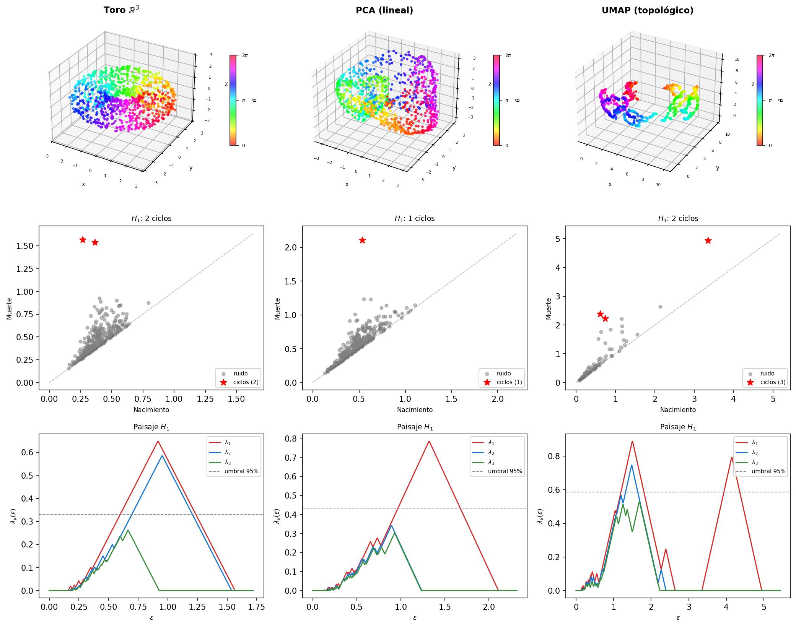
La implicación práctica es clara: cuando tenemos datos de alta dimensión y queremos aplicar homología persistente, UMAP es el paso de reducción natural — no porque sea «mejor» en un sentido genérico, sino porque su objetivo matemático (preservar la estructura simplicial difusa) está alineado con lo que ripser va a medir después. PCA es una alternativa rápida y determinista, pero al ser lineal puede perder estructura no lineal como los dos ciclos del toro.
El código completo está en code/tda/umap_reduccion.py.
- El toro tiene \(\beta_1 = 2\). ¿Cuántos ciclos persistentes esperarías en \(H_1\) si los datos fueran una esfera (\(S^2\)) en \(\mathbb{R}^{50}\)? ¿Y si fueran un toro de dimensión 3 (\(T^3 = S^1 \times S^1 \times S^1\))?
- UMAP usa \(k\) vecinos para calibrar la escala local. Experimenta con \(k = 5\), \(k = 15\) y \(k = 50\): ¿cómo afecta al número de ciclos detectados por
ripser? ¿Existe un valor óptimo o es robusto? - Pídele a un LLM: «Explícame por qué UMAP preserva la topología global mejor que una reducción por PCA cuando los datos tienen estructura no lineal.»
- Aplica UMAP como función lente —en lugar de PCA— en el Mapper de las Recetas 5 y 6. ¿Qué estructura esperas ver en el grafo resultante? ¿Cómo predices que cambiarán los ratios \(d/\text{trav}\) (Receta 5) y el número de nodos y aristas (Receta 6)?
2.8 Receta 8: UMAP y Mapper aplicado al Camino del Héroe y al árbol de la ciencia
Las Recetas 5 y 6 usan PCA como función lente del Mapper: proyectan los embeddings sobre las dos primeras componentes principales y construyen el grafo a partir de ese plano lineal. La Receta 7 mostró que UMAP preserva estructura no lineal mejor que PCA — pero en un contexto distinto: como paso de reducción dimensional previo a ripser, bajando un toro sintético de \(\mathbb{R}^{50}\) a \(\mathbb{R}^3\) para calcular homología persistente. Esta receta cierra el bucle y plantea la pregunta natural: ¿qué ocurre si sustituimos PCA por UMAP como lente del Mapper sobre embeddings en \(\mathbb{R}^{384}\), sin hacer ninguna reducción de dimensión adicional?
La distinción es importante. En la Receta 7, UMAP reduce — los tres componentes resultantes alimentan directamente a ripser. Aquí, UMAP organiza el cubrimiento: los dos componentes UMAP actúan como coordenadas de la cuadrícula sobre la que Mapper construye sus parches, pero el clustering dentro de cada parche se hace en el espacio de alta dimensión original. No reducimos para calcular homología — reducimos únicamente para definir la lente.
2.8.1 El Camino del Héroe con lente UMAP
Retomamos los embeddings de las nueve novelas de la Receta 5 y cambiamos solo la función lente. La lente pasa de PCA(2) a UMAP(2): en lugar de proyectar sobre los dos ejes de máxima varianza lineal, Mapper organiza su cuadrícula sobre la variedad semántica no lineal aprendida por UMAP. El clustering local, en cambio, se hace con DBSCAN directamente sobre los embeddings originales en \(\mathbb{R}^{384}\), usando distancia coseno. La separación es deliberada: UMAP decide qué parches cubren la nube; DBSCAN decide, dentro de cada parche, qué pasajes son vecinos en el espacio semántico original.
Esta elección evita aplicar una segunda proyección no lineal antes del clustering. La distancia coseno es la métrica habitual para embeddings de frases porque compara dirección semántica más que longitud del vector, pero no elimina la cautela de la caja anterior: en 384 dimensiones DBSCAN sigue dependiendo de eps y de que las distancias conserven suficiente contraste local. La posición narrativa sigue siendo la base de la visualización en espiral, pero no forma parte de la lente.
import numpy as np
import kmapper as km
import umap
from sklearn.cluster import DBSCAN
data = np.load("code/tda/data/hero_books.npz",
allow_pickle=True)
embeddings = data["embeddings"]
positions = data["positions"]
book_ids = data["book_ids"]
book_names = [str(n) for n in data["book_names"]]
# Lente: organiza la cuadrícula de cobertura
reducer_lens = umap.UMAP(n_components=2,
n_neighbors=15,
random_state=42)
mapper = km.KeplerMapper(verbose=0)
for i, name in enumerate(book_names):
mask = book_ids == i
emb = embeddings[mask]
lens = reducer_lens.fit_transform(emb) # (n, 2)
graph = mapper.map(
lens, emb,
cover=km.Cover(n_cubes=7, perc_overlap=0.35),
clusterer=DBSCAN(eps=0.5, min_samples=3,
metric="cosine"),
)
n_nodes = len(graph["nodes"])
n_edges = sum(len(v) for v in graph["links"].values())
print(f" {name:20s} nodos={n_nodes}, aristas={n_edges}")La conclusión no varía respecto a la Receta 5: los valores \(d/\text{trav}\) no indican circularidad en ninguna novela. Lo que cambia es la geometría del grafo: la lente UMAP 2D captura la variedad semántica no lineal de los pasajes, y DBSCAN agrupa dentro de cada parche usando la similitud angular de los embeddings originales. En lugar de cuadrar la cubierta sobre los ejes de máxima varianza, Mapper la cuadra sobre la topología aprendida por UMAP; en lugar de volver a reducir el espacio para el clustering, conserva la métrica semántica original. La visualización como espiral sigue ordenando los nodos por posición narrativa media, igual que en la Receta 5. La Figura 2.13 muestra los nueve hipergrafos en espiral con esta lente, con grafos de 39 a 46 nodos.
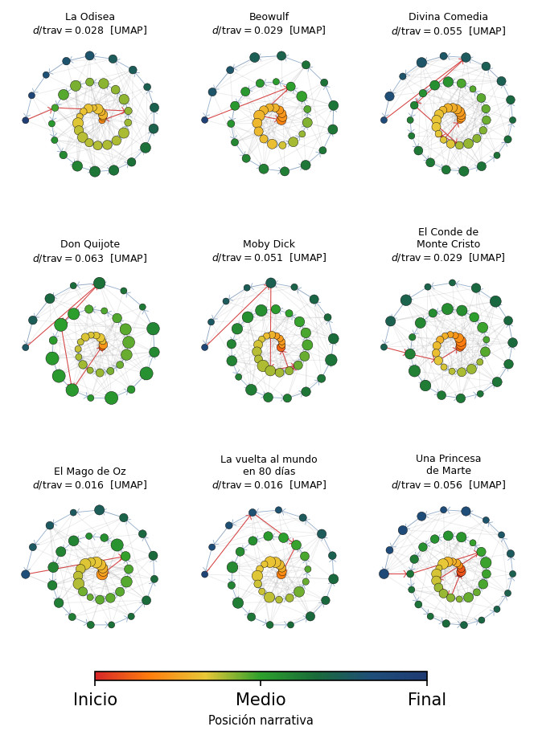
2.8.2 El árbol de la ciencia con lente UMAP
Para el corpus arXiv aplicamos la misma lógica: UMAP organiza la cubierta, y DBSCAN decide los clusters locales en el espacio semántico original. La reducción PCA(50) de la Receta 6 se mantiene solo para el cálculo de \(H_0\) con ripser; no se usa como entrada del Mapper de esta receta. Aquí la lente UMAP(2) se ajusta directamente sobre los embeddings en \(\mathbb{R}^{384}\), y el clustering se hace con DBSCAN y distancia coseno sobre esos mismos embeddings:
import kmapper as km
import umap
from sklearn.cluster import DBSCAN
# Lente UMAP 2D: directamente desde los embeddings originales
lens = umap.UMAP(n_components=2, n_neighbors=15,
random_state=42).fit_transform(emb)
mapper = km.KeplerMapper(verbose=0)
graph = mapper.map(
lens, emb,
cover=km.Cover(n_cubes=10, perc_overlap=0.4),
clusterer=DBSCAN(eps=0.5, min_samples=3,
metric="cosine"),
)
n_nodes = len(graph["nodes"])
n_edges = sum(len(v) for v in graph["links"].values())
print(f"Mapper UMAP: {n_nodes} nodos, {n_edges} aristas")La diferencia respecto a la Receta 6 es conceptual antes que técnica. Con lente PCA 2D, el Mapper organiza los parches a lo largo de los ejes de máxima varianza global. Con lente UMAP, los parches se organizan a lo largo de la variedad no lineal que los datos habitan: UMAP detecta que ciertos papers de biología computacional y física estadística viven más cerca entre sí de lo que los dos primeros ejes PCA indicarían, y esa proximidad se traduce en aristas nuevas en el grafo. El árbol de la ciencia resultante tiene más conexiones transversales visibles — más fiel a la topología real del corpus que la proyección lineal.
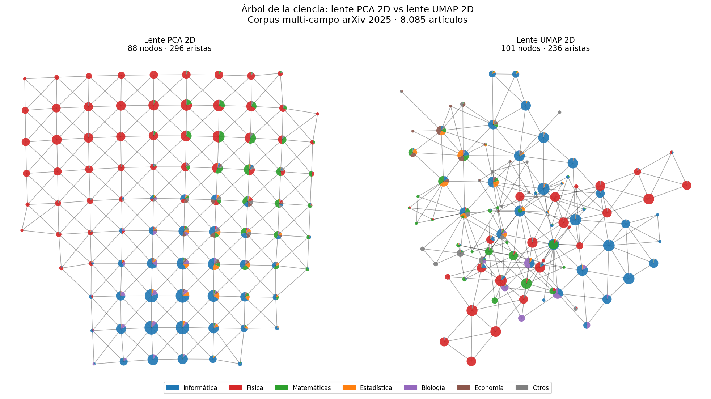
2.8.3 ¿Es fiel el nervio Mapper?
Hemos construido dos nervios para el corpus arXiv: el nervio basado en PCA (lente PCA 2D, clustering PCA 20D) de la Receta 6 y el nervio basado en UMAP (lente UMAP 2D, clustering DBSCAN con coseno en \(\mathbb{R}^{384}\)) de esta receta. La comparación ya no pregunta si una segunda reducción no lineal hace más discriminativo a DBSCAN, sino algo más específico: si usar UMAP como lente, manteniendo el clustering en el espacio semántico original, cambia la topología del nervio.
A diferencia de la Receta 7, aquí no conocemos la verdadera forma de los datos: no conocemos la topología del corpus arXiv de antemano, y cualquier reducción dimensional previa que usáramos como referencia — incluyendo una reducción UMAP de alta dimensión — introduciría sus propias distorsiones. La validación se apoya exclusivamente en los pasos de consistencia interna del protocolo de Sección 5.8: bootstrap CI sobre \(\beta_k\) y línea nula de permutaciones.
Consistencia del recuento (paso 1): contando componentes conexas y ciclos en los dos grafos Mapper — con ripser sobre la matriz de distancias del grafo usando maxdim=1 — ambos nervios dan \(\beta_0 = 1\) y \(\beta_1 = 0\). El corpus arXiv forma una variedad conexa sin circularidad discernible, y ambas representaciones lo capturan. \(H_2\) no se calcula: con lente 2D la cubierta es una lámina y \(\beta_2 = 0\) de forma estructural, como se explica en Sección 5.8.
Banda bootstrap y línea nula (pasos 2 y 3): cada diagrama de persistencia se convierte en su paisaje \(\lambda_k(\varepsilon)\) (Sección 5.6). Dado que el paisaje vive en un espacio vectorial, el intervalo de confianza bootstrap se calcula directamente como la banda pointwise 5–95% de los \(B = 30\) paisajes de remuestras del 80% de los papers; la línea nula al 95% proviene de \(B' = 200\) permutaciones de coordenadas por paper. Ambas dimensiones se procesan en un único pase bootstrap, reutilizando los 30 grafos bootstrap para los pasos 5 y 6.
Sensibilidad a parámetros (paso 4): el protocolo anterior mide sensibilidad a los datos, pero no a las decisiones del analista. La cuadrícula \(3 \times 3\) de \((m, p) \in \{8, 10, 12\} \times \{0.3, 0.4, 0.5\}\) produce en ambos nervios el mismo vector \((\beta_0, \beta_1) = (1, 0)\) en las 9 configuraciones — la conclusión topológica es robusta a los hiperparámetros elegidos. El número de nodos oscila entre 70 y 130 según la configuración, pero la homología permanece invariante.
maxdim=1). Ambos nervios son conexos y no muestran ciclos persistentes en \(H_1\); por tanto, la diferencia visual entre sus grafos no cambia la homología detectada.
| Nervio | Lente | Clustering | Nodos | Aristas | \(\beta_0\) | \(\beta_1\) |
|---|---|---|---|---|---|---|
| PCA-nervio | PCA 2D | PCA 20D | 88 | 296 | 1 ✓ | 0 ✓ |
| UMAP-nervio | UMAP 2D | coseno \(\mathbb{R}^{384}\) | 101 | 236 | 1 ✓ | 0 ✓ |
Los números de Betti son idénticos en los dos nervios: \(\beta_0 = 1\) y \(\beta_1 = 0\). Como se explicó en Sección 5.2, iguales \(\beta_k\) implica misma homología, no necesariamente homeomorfismo. Desde la perspectiva del protocolo de validación interna, ambos nervios son homológicamente indistinguibles en \(H_0\) y \(H_1\) y ninguno presenta topología espuria. El protocolo cumple su función de sanity check — descarta que alguno de los nervios tenga ciclos artificiales — pero no discrimina entre ellos.
La diferencia visible entre los dos grafos (88 nodos/296 aristas frente a 101 nodos/236 aristas, distintas conexiones interdisciplinares) es una propiedad combinatoria del grafo, no topológica en sentido estricto: los mismos números de Betti son compatibles con grafos muy distintos en densidad y conectividad local. Para elegir entre los dos nervios hace falta validación externa — comprobar si sus particiones coinciden con estructura conocida del corpus, como las categorías arXiv o las colaboraciones históricas entre campos. Esa validación queda fuera del alcance de este capítulo, pero es la siguiente pregunta natural.
Los pasos 5 y 6 separan los dos nervios donde los \(\beta_k\) no podían: estabilidad de membresía de nodos y persistencia de aristas punto a punto bajo bootstrap. Esta validación combinatoria es más cara que el recuento de Betti porque exige reconstruir muchos nervios sobre remuestras y permutaciones. La versión anterior del experimento indicaba que PCA era más estable combinatoriamente que UMAP, algo esperable porque UMAP es estocástico y sensible al conjunto de entrenamiento. Con la variante UMAP-coseno, esa comparación debe recalcularse antes de convertirla en afirmación numérica: la conclusión topológica de la Tabla 2.3 ya está validada, pero la comparación fina de estabilidad queda como el siguiente chequeo experimental.
Para el corpus del Camino del Héroe el resultado es análogo: ambos nervios dan \(\beta_0 = 1\) y \(\beta_1 = 0\). La conclusión topológica — ausencia de circularidad narrativa — es robusta a la elección de lente.
- En la Receta 8 usamos UMAP como lente, pero mantenemos DBSCAN en el espacio original con distancia coseno. ¿Qué problema evitamos al no reutilizar la reducción UMAP 2D como espacio de clustering?
- El protocolo da \(\beta_0 = 1\) y \(\beta_1 = 0\) para ambos nervios del corpus arXiv. Los grafos son visualmente distintos (88 vs 101 nodos, distribución diferente de aristas). ¿Qué implica esto sobre la capacidad de los números de Betti para discriminar entre los dos nervios? ¿Qué herramienta sería necesaria para la discriminación?
- Propón un experimento de validación externa para el UMAP-nervio del árbol de la ciencia: ¿qué propiedad conocida del corpus arXiv usarías para comprobar si el nervio captura estructura real, y cómo medirías si lo hace mejor que el PCA-nervio?
3 Aplicaciones
Los dominios que han adoptado el TDA comparten un rasgo común: la forma importa más que los momentos. Donde la estadística clásica ve una distribución y el aprendizaje automático ve un vector de features, el TDA ve componentes conexas, agujeros y cavidades — y esa diferencia tiene consecuencias prácticas. Biología molecular y diseño de fármacos. Predecir si una molécula candidata se une a una proteína diana es el cuello de botella del descubrimiento de fármacos. Los descriptores moleculares clásicos — fingerprints ECFP, grafos de conectividad — capturan la estructura local pero ignoran la forma tridimensional de la cavidad de unión. Dos moléculas con grafos idénticos pero geometrías distintas pueden tener afinidades completamente diferentes; la homología persistente las distingue donde el grafo no puede. Por ejemplo, se ha demostrado que descriptores topológicos superan en hasta un 30% los métodos basados en grafos para predecir afinidad proteína-ligando, con resultados análogos en predicción de estabilidad de proteínas.
Aprendizaje profundo topológico. Las redes neuronales de grafos (Graph Neural Networks, GNN) generalizaron el deep learning a datos relacionales, pero solo capturan interacciones por pares: dos nodos están conectados o no. Muchos sistemas reales — moléculas, redes cerebrales, mallas 3D — tienen interacciones de orden superior que los grafos no pueden representar: tres residuos que forman una cavidad de unión, cuatro neuronas que se co-activan en un bucle. El aprendizaje profundo topológico (Topological Deep Learning, TDL) responde a esto definiendo redes neuronales directamente sobre complejos simpliciales y celulares, donde las features viven no solo en nodos sino también en aristas, triángulos, tetraedros. El paso de mensajes se produce entre símplices adyacentes en todas las dimensiones: un triángulo agrega información de sus tres aristas, una arista agrega información de los triángulos que la contienen. El resultado son modelos que capturan relaciones de grupo que un GNN convencional pierde por construcción. En predicción de propiedades moleculares, donde las interacciones de tres o cuatro átomos determinan la reactividad, TDL supera consistentemente a los GNN estándar sin aumentar el número de parámetros.
Diagnóstico clínico e imagen médica. Clasificar tumores cerebrales por resonancia magnética es difícil porque la morfología varía enormemente entre pacientes del mismo tipo histológico. Los descriptores convencionales — estadísticas de intensidad, tamaño, forma elíptica aproximada — ignoran rasgos como el número de cavidades internas o la complejidad del borde, que los radiólogos sí usan. Los vectores de persistencia derivados de la homología de la imagen del tumor son invariantes a rotaciones y escalados, y capturan precisamente esos rasgos estructurales. Estudios recientes en glioblastoma multiforme obtienen mejoras de clasificación del 5–8% sobre descriptores convencionales.
Series temporales y sistemas dinámicos. Una señal EEG durante un episodio epiléptico tiene una dinámica muy distinta de la actividad basal, pero esa diferencia no siempre es visible en el dominio de frecuencias. El teorema de Takens — que veremos en Capítulo 5 — permite reconstruir el atractor del sistema a partir de retardos de la propia señal: si la dinámica es periódica, el atractor tiene la topología de un toro; si es caótica, la topología es más compleja. Aplicando homología persistente al atractor reconstruido, se detectan cambios de régimen — como la transición ictal — sin asumir ningún modelo paramétrico. La ventaja sobre los espectrogramas es que la topología del atractor es robusta a artefactos de movimiento que distorsionan el espectro pero no cambian la forma global de la trayectoria.
Neurociencia y redes cerebrales. Los conectomas — mapas de conexiones entre regiones cerebrales — son grafos donde la organización global importa tanto como el peso de cada arista. Comparar conectomas entre pacientes con Alzheimer y controles sanos, o entre estados de sueño y vigilia, requiere métricas que capturen esa organización global, no solo propiedades locales como el grado de cada nodo. Los números de Betti del complejo simplicial asociado al conectoma — calculados ponderando aristas por correlación funcional — detectan diferencias sistemáticas entre grupos que el análisis espectral clásico del grafo no captura.
Finanzas y detección de burbujas. Los precios de activos correlacionados forman una nube de puntos en el espacio de rentabilidades, y esa nube cambia de forma durante las crisis. En condiciones normales los activos se agrupan en sectores bien separados — varias componentes conexas en \(H_0\). Antes de una burbuja, las correlaciones aumentan abruptamente y los sectores se fusionan en una única componente densa: la topología del mercado colapsa. La persistencia de \(H_0\) — la distancia a la que los sectores se fusionan — actúa como indicador adelantado de riesgo sistémico, con ventanas de hasta cuatro semanas antes de correcciones significativas en datos históricos.
- En biología molecular, diagnóstico clínico y neurociencia, ¿qué tienen en común los descriptores convencionales que el TDA supera? ¿Por qué la invarianza bajo deformaciones es especialmente valiosa en estos dominios?
- Pídele a un LLM: «¿Qué librerías de Python implementan homología persistente y cómo empezar con un ejemplo básico?»
4 Limitaciones actuales
El TDA tiene garantías teóricas sólidas, pero entre el concepto y el uso en producción hay obstáculos concretos. Las limitaciones están ordenadas de mayor a menor impacto práctico.
4.1 Densidad de datos necesaria
La viabilidad del TDA depende de la dimensión intrínseca del objeto subyacente, no de la dimensión ambiente de los datos. El análisis cuantitativo — con tabla comparativa por dominio (lenguaje, genómica, audio, señales, imágenes, etc.) — se desarrolla en Sección 5.5 dentro de los Fundamentos. Aquí basta con la regla práctica: el TDA funciona bien cuando los datos provienen de un proceso con pocos grados de libertad reales; falla cuando la dimensión intrínseca es comparable a la dimensión ambiente.
4.2 Complejidad computacional
Este es el cuello de botella principal de la homología persistente (ripser, gudhi). Calcular \(H_j\) requiere construir símplices de dimensión \(j{+}1\): aristas para \(H_0\), triángulos para \(H_1\), tetraedros para \(H_2\). El número de \((j{+}1)\)-símplices potenciales en un complejo de Vietoris-Rips es \(\binom{n}{j+2}\), es decir, \(O(n^{j+2})\). La reducción de la matriz de frontera — el paso algebraico central — tiene coste proporcional al tamaño de esta matriz:
| Dimensión homológica | Símplices necesarios | Coste |
|---|---|---|
| \(H_0\) (componentes) | \(\binom{n}{2}\) aristas | \(O(n^2)\) |
| \(H_1\) (agujeros) | \(\binom{n}{3}\) triángulos | \(O(n^3)\) |
| \(H_2\) (cavidades) | \(\binom{n}{4}\) tetraedros | \(O(n^4)\) |
Cada dimensión homológica adicional añade un factor \(n\) al coste. En la práctica, ripser emplea optimizaciones (lazy evaluation, cohomología en lugar de homología) que evitan construir todos los símplices explícitamente, pero el escalado asintótico persiste. Para \(H_1\), el límite práctico está en unos pocos miles de puntos; para \(H_2\), en unos cientos.
En cambio, Mapper y UMAP tienen perfiles de coste distintos — Mapper aplica un algoritmo de clustering (DBSCAN, \(O(n_p \log n_p)\) con índice espacial) a cada uno de los \(m\) intervalos de cubierta, donde \(n_p \approx n/m\) son los puntos de cada parche; el coste total es aproximadamente \(O(n \log(n/m))\), manejable con cientos de miles de puntos. UMAP construye el grafo de vecinos más cercanos en \(O(n \log n)\) con estructuras de árbol. Ambos son viables a escalas donde ripser ya es prohibitivo.
4.3 Sensibilidad a outliers
Aunque la persistencia filtra artefactos de corta duración (las características con persistencia baja son ruido), los outliers pueden crear artefactos con persistencia engañosamente alta. Un punto aislado muy lejos de la nube principal tarda en conectarse, generando una barra larga en \(H_0\) que no refleja estructura real sino un dato anómalo. En \(H_1\), un puñado de outliers pueden crear triángulos espurios que cierran ciclos ficticios.
Aquí se produce la misma tensión que al tratar valores extremos en una distribución: el enfoque estándar es eliminarlos como ruido, pero en muchos dominios — finanzas, detección de fallos, anomalías de red — el outlier es exactamente el evento de mayor información. El TDA no resuelve esta ambigüedad: no puede distinguir si una barra larga la produce una característica topológica real o un punto anómalo. La solución pragmática es inspeccionarla explícitamente — localizar el punto con los ciclos representativos de la Receta 4 — y decidir según el dominio si es señal o artefacto.
4.4 Interpretabilidad
Los diagramas de persistencia resumen la «forma» de los datos, pero conectar una característica topológica con una explicación causal o accionable es difícil. Detectar que hay un ciclo en \(H_1\) es informativo; explicar por qué existe ese ciclo en términos del dominio requiere trabajo adicional — como los ciclos representativos de la Receta 4 — y aun así la interpretación no es automática. Aquí es donde las técnicas complementarias recuperan terreno: Mapper traduce la forma en un grafo inspeccionable donde cada nodo tiene una etiqueta de dominio (las novelas de la Receta 5, los campos científicos de la Receta 6); UMAP proyecta la variedad a dos o tres dimensiones preservando la topología, de modo que la estructura global es visible de un vistazo; y el análisis estadístico tradicional — correlaciones, pruebas de hipótesis, regresión sobre los vectores de persistencia — permite vincular las características topológicas con variables externas. En la práctica, la homología persistente detecta qué hay; las demás técnicas ayudan a entender qué significa.
4.5 No unicidad de la operación inversa
El diagrama de persistencia indica qué características topológicas existen (cuántos agujeros, a qué escalas), pero la operación inversa — localizar dónde están — no tiene solución única. Como vimos en la Receta 4, para un mismo generador de \(H_1\) existen múltiples ciclos homólogos que encierran el mismo agujero: el camino más corto, el de mínima longitud geométrica, el de mínima área encerrada. Todos son respuestas válidas y topológicamente equivalentes. Esta ambigüedad es inherente a la homología: dos ciclos que difieren por una frontera (un triángulo añadido o eliminado) representan la misma clase. En la práctica, esto significa que distintos algoritmos o implementaciones pueden devolver ciclos representativos diferentes para la misma característica persistente.
4.6 Concentración de distancias en alta dimensión
En dimensiones muy altas, las distancias entre puntos tienden a concentrarse: todos los pares de puntos quedan a una distancia similar, independientemente de la métrica elegida. El fenómeno afecta en mayor o menor medida a todas las métricas habituales — euclídea, coseno, Manhattan, correlación de Pearson —, aunque algunas son más robustas que otras: la distancia coseno y la correlación de Pearson, al estar normalizadas, se degradan algo más lentamente que la distancia euclídea en dimensiones muy altas, pero ninguna escapa al problema asintóticamente. Cuando esto ocurre, la filtración de Vietoris-Rips pierde resolución — todas las aristas se insertan casi al mismo tiempo — y las estructuras topológicas detectadas pierden significado. La Receta 7 aborda exactamente este problema: reduce primero la dimensión con UMAP — que preserva la estructura simplicial — antes de aplicar ripser, obteniendo resultados superiores a PCA (lineal).
- Un dataset tiene 1.000 puntos en \(\mathbb{R}^{50}\) pero su dimensión intrínseca es 3. ¿Es viable calcular \(H_1\)? ¿Y si la dimensión intrínseca fuera 20?
- ¿Por qué
ripserpuede calcular \(H_1\) para 5.000 puntos pero no \(H_2\)? Calcula cuántos tetraedros potenciales hay con \(n = 5{,}000\). - El \(H_0\) de un corpus de transacciones financieras muestra una barra con persistencia tres veces el umbral nulo — la señal típica de una componente aislada. Tu compañero propone eliminar ese punto como outlier antes de continuar el análisis. ¿Estás de acuerdo? Justifica y describe qué herramienta del capítulo usarías para tomar la decisión.
5 Fundamentos
Las recetas anteriores mostraron que ripser detecta islas, agujeros y ciclos sin que el programador se los indique explícitamente; que esas características son robustas al ruido y a las transformaciones continuas; y que Mapper y UMAP organizan los mismos datos en formatos inspeccionables. Lo que no explicamos es por qué funciona: qué estructura matemática convierte una nube de puntos en una lista de «nacimientos» y «muertes», por qué la topología resultante es estable, y cómo se vectoriza para conectarla con el resto de la caja de herramientas estadística. La clave está en tres ideas que se construyen sobre sí mismas: los complejos simpliciales que generalizan los grafos a dimensiones superiores, la homología que cuenta los agujeros de un complejo, y la filtración que rastrea cómo cambian esos agujeros al variar la escala de observación.
5.1 Complejos simpliciales y filtración de Vietoris-Rips
La topología estudia propiedades que no cambian cuando se estira o deforma un espacio de forma continua — sin rasgarlo ni pegarlo. Para aplicar esas ideas a datos discretos (una nube de puntos) necesitamos primero construir un objeto geométrico a partir de ellos: un complejo simplicial.
Un \(k\)-símplice es la generalización de un punto (\(k=0\)), una arista (\(k=1\)), un triángulo (\(k=2\)) y un tetraedro (\(k=3\)) a cualquier dimensión: es la cápsula convexa de \(k+1\) vértices en posición general. Un complejo simplicial es una colección de símplices en la que toda cara de cada símplice también pertenece a la colección: si un triángulo \(\{u, v, w\}\) pertenece al complejo, entonces también deben pertenecer sus tres aristas y sus tres vértices. Es la misma exigencia que en un grafo — donde una arista implica la existencia de sus dos extremos — pero aplicada a objetos de cualquier dimensión.
Dado un conjunto de puntos \(X = \{x_1, \ldots, x_n\}\) y un parámetro de escala \(\varepsilon \geq 0\), el complejo de Vietoris-Rips \(\mathrm{VR}(X, \varepsilon)\) incluye todos los símplices cuyos vértices están a distancia mutua menor o igual que \(\varepsilon\): el símplice \(\{x_{i_0}, \ldots, x_{i_k}\}\) pertenece al complejo si y solo si \(d(x_{i_j}, x_{i_l}) \leq \varepsilon\) para todo par de índices \(j, l\). Para \(\varepsilon = 0\) cada punto es un símplice aislado; para \(\varepsilon = \infty\) el complejo incluye todos los posibles símplices. Entre medias, el complejo se va «llenando» de aristas, triángulos y tetraedros conforme crece \(\varepsilon\).
¿Por qué Vietoris-Rips y no el complejo de Čech, que incluye un símplice cuando las bolas de radio \(\varepsilon/2\) centradas en sus vértices tienen intersección común? El complejo de Čech tiene mejores garantías teóricas, pero es mucho más caro: comprobar la intersección de \(k\) bolas en dimensión alta requiere resolver un sistema de programación lineal. Vietoris-Rips solo comprueba distancias por pares (\(O(n^2)\) cálculos, independientemente de la dimensión de \(k\)), y teoremas de comparación garantizan que queda «atrapado» entre dos complejos de Čech a escalas cercanas, preservando las características topológicas más persistentes.
Al variar \(\varepsilon\) de \(0\) a \(\infty\) obtenemos una filtración: una familia anidada de complejos \(\mathrm{VR}(X, \varepsilon_1) \subseteq \mathrm{VR}(X, \varepsilon_2) \subseteq \cdots\) para \(\varepsilon_1 \leq \varepsilon_2\). Cada vez que \(\varepsilon\) supera la distancia entre dos puntos se añade una arista; cuando supera la distancia máxima dentro de un grupo de \(k+1\) puntos mutuamente cercanos, se añade un \(k\)-símplice. La filtración es una película de la topología del conjunto de datos a todas las escalas simultáneamente.
Ilustremos esto con cuatro puntos en los vértices de un cuadrado de lado 1 — el ejemplo más pequeño donde aparece un ciclo. Para seguir la evolución conviene contar los rasgos topológicos: los números de Betti \(\beta_k\) cuentan el número de «huecos» en cada dimensión — \(\beta_0\) es el número de componentes conexas, \(\beta_1\) el de ciclos independientes, y así sucesivamente (se formalizan en la sección siguiente). A escala \(\varepsilon = 0.9\) no hay aristas (la distancia entre vecinos adyacentes es 1): cuatro puntos aislados, cuatro componentes (\(\beta_0 = 4\)), ningún ciclo (\(\beta_1 = 0\)). A \(\varepsilon = 1.05\) se conectan los cuatro lados: cuatro aristas que forman un cuadrado hueco. Las cuatro componentes se funden en una sola (\(\beta_0 = 1\)) y nace un ciclo (\(\beta_1 = 1\)). A \(\varepsilon = 1.45\) se añaden las diagonales (\(\sqrt{2} \approx 1.41\)): aparecen dos triángulos que rellenan el interior, el ciclo muere (\(\beta_1 = 0\)) y la única componente conectada persiste (\(\beta_0 = 1\)).

La Figura 5.1 resume este proceso: el mismo conjunto de puntos a cuatro escalas, mostrando cómo la topología emerge y desaparece. Lo que acabamos de describir informalmente — «en \(\varepsilon_2\) nace el ciclo, en \(\varepsilon_4\) muere» — es exactamente lo que calcula la homología persistente de forma sistemática sobre toda la filtración.
- ¿Por qué el complejo de Vietoris-Rips se define por condiciones sobre todos los pares de vértices y no sobre la intersección de bolas? ¿Qué ventaja computacional aporta esto en dimensión alta?
- Con 6 puntos, ¿cuántas aristas, triángulos y tetraedros potenciales puede contener \(\mathrm{VR}(X, \infty)\)?
- Pídele a un LLM: «Explícame la diferencia intuitiva entre un grafo y un complejo simplicial. ¿Qué información topológica captura un triángulo que una arista no puede?»
5.2 Homología persistente: nacimientos, muertes y números de Betti
Con la filtración en mano, la pregunta es: ¿cómo cambia el número de componentes conexas, agujeros y cavidades al variar \(\varepsilon\)? Los números de Betti son los contadores naturales: \(\beta_0\) cuenta las componentes conexas, \(\beta_1\) los ciclos de dimensión 1 (los «agujeros» rodeados por aristas), \(\beta_2\) las cavidades esféricas, y \(\beta_k\) generaliza esto a dimensión \(k\). La homología persistente rastrea cómo cada \(\beta_k\) cambia a lo largo de la filtración, registrando el instante de \(\varepsilon\) en que cada característica nace y el instante en que muere.
Nótese qué garantizan los números de Betti, \(\beta_k\), y qué no. Son invariantes topológicos: si dos espacios son homeomorfos — es decir, si existe una deformación continua e invertible que transforma uno en el otro sin cortar ni pegar, como aplastar una esfera de arcilla hasta convertirla en un cubo — sus \(\beta_k\) son necesariamente idénticos. La implicación contraria, sin embargo, no se sostiene: iguales \(\beta_k\) solo garantiza el mismo recuento de componentes, ciclos y cavidades en cada dimensión — lo que los matemáticos llaman misma homología — pero no el mismo homeomorfismo. El contraejemplo canónico es el toro \(T^2\) y la botella de Klein \(K\): con coeficientes en \(\mathbb{Z}_2\) — los que usa ripser — ambos tienen \(\beta_0 = 1\), \(\beta_1 = 2\), \(\beta_2 = 1\), y aun así no son homeomorfos. Lo que los distingue es información estructural más fina que esos conteos no capturan. De forma más concreta: dos nubes de puntos con los mismos \(\beta_k\) no tienen agujeros ni cavidades de distinto tipo, pero pueden diferir en la densidad local de puntos, en cómo se distribuyen los clusters, en el peso de las conexiones entre regiones — todo aquello que no sea «cuántos agujeros hay en cada dimensión».
5.2.1 \(H_0\): componentes conexas, enlace simple y centroides
\(H_0\) es el grupo de homología de dimensión 0: un grupo abeliano cuyos generadores corresponden a las componentes conexas del complejo. Lo que cuenta directamente esas componentes es su rango, \(\beta_0(\varepsilon)\) — el número de Betti cero —, que es el número de piezas conexas del complejo de Vietoris-Rips a escala \(\varepsilon\): empieza en \(n\) (cada punto es su propia componente) y decrece monotónicamente hasta 1 conforme \(\varepsilon\) crece y las aristas van conectando vecinos. El algoritmo que ejecuta esta filtración es union-find (unión–búsqueda): mantiene una partición de los \(n\) puntos y, al insertar cada arista \((u,v)\) en orden creciente de distancia, fusiona las dos componentes si todavía están separadas. El cuello de botella no es el propio union-find — que es casi lineal — sino el cálculo previo de las \(\binom{n}{2}\) distancias entre pares de puntos, lo que sitúa la complejidad total en \(O(n^2)\). Cada fusión corresponde a la muerte de una barra en el diagrama de persistencia de \(H_0\); la escala de muerte es exactamente la distancia de la arista que la provocó.
Esta dinámica es algebraicamente idéntica al clustering jerárquico de enlace simple (single-linkage): en enlace simple, dos clusters se fusionan cuando la distancia mínima entre cualquier par de puntos de clusters distintos es la menor disponible — es decir, cuando la primera arista que los conecta entra en la filtración. El dendrograma de enlace simple y el diagrama de persistencia de \(H_0\) codifican exactamente la misma información: cada nodo interno del dendrograma a altura \(h\) corresponde a una barra \([0, h]\) en \(H_0\).
La Figura 5.2 ilustra cómo la filtración, el dendrograma y el código de barras son tres caras del mismo objeto.
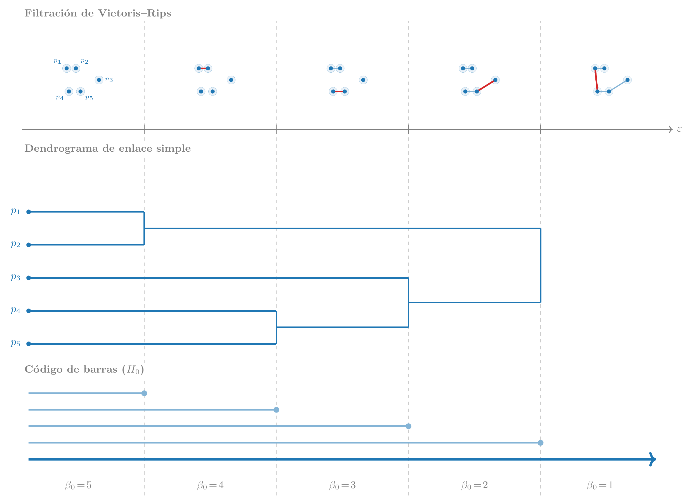
5.2.2 \(H_1\): ciclos, fronteras y representantes
\(H_1\) mide los bucles cerrados de aristas que rodean un agujero genuino — una región del complejo delimitada por aristas pero sin relleno de triángulos. La confusión más frecuente es creer que \(H_1\) trata de triángulos; la realidad es que los ciclos son cadenas de aristas y los triángulos son lo que los destruye. Piénsalo así: las aristas, (1)-símplices, forman la «valla» que delimita una región; los triángulos, (2)-símplices, son el «suelo» que puede rellenarla. Un agujero en \(H_1\) es una valla cerrada sin suelo.
El patrón se extiende a cualquier dimensión: un \(k\)-símplice crea una característica de \(H_k\), y un \((k{+}1)\)-símplice la destruye.
| Grupo | Nace cuando… | Muere cuando… |
|---|---|---|
| \(H_0\) | existe un punto (0-símplice) aislado | una arista (1-símplice) lo conecta a otro componente |
| \(H_1\) | una arista (1-símplice) cierra un bucle | un triángulo (2-símplice) rellena el hueco |
| \(H_2\) | un triángulo (2-símplice) cierra una cavidad | un tetraedro (3-símplice) la rellena |
El algoritmo de reducción estándar (standard reduction algorithm) detecta nacimientos y muertes procesando los símplices de la filtración en orden creciente de \(\varepsilon\) con estos tres pasos:
Arista cierra un bucle → \(H_1\) nace. Cuando una arista nueva conecta dos vértices que ya estaban unidos por un camino de aristas previas, añadiendo el eslabón que faltaba, esa arista cierra un ciclo. Su escala \(\varepsilon\) es el instante de nacimiento del nuevo \(H_1\).
Triángulo rellena el ciclo → \(H_1\) muere. Cuando un triángulo nuevo tiene sus tres aristas ya presentes en el complejo, el triángulo «rellena» el hueco que esas aristas delimitaban. Su escala \(\varepsilon\) es el instante de muerte.
El par (nacimiento, muerte) es la barra roja en el código de barras — y el punto con coordenadas \((\varepsilon_\text{arista}, \varepsilon_\text{triángulo})\) en el diagrama de persistencia.
El número de símplices a examinar crece polinomialmente con \(n\): con \(n\) puntos hay \(O(n^2)\) aristas pero \(O(n^3)\) triángulos posibles, y es ese número de triángulos el que domina el coste del algoritmo. El párrafo siguiente detalla de dónde sale exactamente ese cubo.
La Figura 5.3 muestra el proceso en cuatro fotogramas sincronizados con el código de barras. En \(\varepsilon_2\) las aristas conectan todos los puntos en una cadena: las componentes se fusionan (\(H_0\) decrece a 1) pero el bucle no está cerrado todavía (\(\beta_1 = 0\)). En \(\varepsilon_3\) la última arista —destacada en rojo— conecta los dos extremos libres de la cadena; como esos extremos ya estaban unidos por el camino existente, esta arista cierra el bucle y \(H_1\) nace (\(\beta_1 = 1\)). En \(\varepsilon_4\) la escala \(\varepsilon\) alcanza el diámetro del anillo: los puntos opuestos quedan a distancia \(\varepsilon\), lo que permite formar los triángulos más largos del abanico. Los triángulos se forman únicamente con vértices del anillo —sin ningún punto central— rellenando el interior, y \(H_1\) muere (\(\beta_1 = 0\)). Cada extremo de las barras del código de barras coincide exactamente con uno de estos eventos.
La versión algebraica del mismo algoritmo usa la matriz de frontera \(\partial_2\): una matriz con una columna por triángulo y una fila por arista, donde la columna del triángulo \(\{u,v,w\}\) tiene unos en las filas de sus tres aristas.
Para entender cómo funciona el algoritmo, lo mejor es seguirlo paso a paso en un ejemplo mínimo: tres puntos \(\{1, 2, 3\}\) que forman un triángulo. La filtración añade los símplices en este orden:
| \(\varepsilon\) | Símplice añadido | Tipo | \(\beta_0\) | \(\beta_1\) | Evento |
|---|---|---|---|---|---|
| \(\varepsilon_1\) | \(1\) | vértice | 1 | 0 | componente aislada |
| \(\varepsilon_2\) | \(2\) | vértice | 2 | 0 | segunda componente aislada |
| \(\varepsilon_3\) | \(3\) | vértice | 3 | 0 | tercera componente aislada |
| \(\varepsilon_4\) | \(\{1,2\}\) | arista | 2 | 0 | fusiona 1 y 2; no cierra ciclo |
| \(\varepsilon_5\) | \(\{2,3\}\) | arista | 1 | 0 | fusiona 2 y 3; no cierra ciclo |
| \(\varepsilon_6\) | \(\{1,3\}\) | arista | 1 | 1 | cierra \(1{-}2{-}3{-}1\) → \(H_1\) nace |
| \(\varepsilon_7\) | \(\{1,2,3\}\) | triángulo | 1 | 0 | rellena el hueco → \(H_1\) muere |
El algoritmo usa dos matrices de frontera en paralelo. La primera, \(\partial_1\), detecta nacimientos de \(H_1\) (aristas que cierran ciclos); la segunda, \(\partial_2\), detecta muertes (triángulos que los rellenan).
\(\partial_1\): ¿qué hace cada arista?
\(\partial_1\) tiene una columna por arista y una fila por vértice: la columna de la arista \(\{u,v\}\) tiene un 1 en las filas \(u\) y \(v\). En nuestro ejemplo, con las columnas y filas ordenadas por \(\varepsilon\):
| \(\{1,2\}\) | \(\{2,3\}\) | \(\{1,3\}\) | |
|---|---|---|---|
| \(1\) | 1 | 0 | 1 |
| \(2\) | 1 | 1 | 0 |
| \(3\) | 0 | 1 | 1 |
La reducción procesa las columnas de izquierda a derecha. Para cada columna se busca el pivote (fila de mayor índice con un 1); si otra columna anterior tiene el mismo pivote, se suman módulo 2 hasta resolver el conflicto.
\(\varepsilon_4\), columna \(\{1,2\}\): pivote = fila \(2\). Ninguna columna anterior tiene ese pivote. La columna queda tal cual. Una columna no nula significa que \(\{1,2\}\) destruye una componente conexa (\(H_0\) muere: 1 y 2 se fusionan).
\(\varepsilon_5\), columna \(\{2,3\}\): pivote = fila \(3\). Ninguna columna anterior tiene ese pivote. La columna queda tal cual. Mismo caso: \(\{2,3\}\) fusiona dos componentes; \(H_0\) muere de nuevo.
\(\varepsilon_6\), columna \(\{1,3\}\): pivote inicial = fila \(3\). Pero la columna \(\{2,3\}\) ya tiene pivote \(3\) → sumar \(\{1,3\} + \{2,3\}\) módulo 2:
resultado \(1\) 1 \(2\) 1 \(3\) 0 Nuevo pivote = fila \(2\). Pero la columna \(\{1,2\}\) tiene pivote \(2\) → sumar de nuevo:
resultado \(1\) 0 \(2\) 0 \(3\) 0 La columna se reduce a cero. Eso significa que \(\{1,3\}\) no puede matar ninguna componente conexa porque 1 y 3 ya están conectados; en su lugar crea un ciclo. \(H_1\) nace en \(\varepsilon_6\).
La intuición de la reducción: al sumar las columnas de \(\{2,3\}\) y \(\{1,2\}\) estamos diciendo «el camino \(1 \to 2 \to 3\) ya existía»; sumarlo a \(\{1,3\}\) módulo 2 cancela exactamente ese camino, dejando columna cero.
\(\partial_2\): ¿qué hace el triángulo?
\(\partial_2\) tiene una columna por triángulo y una fila por arista. Sus columnas aparecen conforme la filtración avanza, no todas a la vez.
En \(\varepsilon_6\) (justo después de que nace el ciclo): \(\partial_2\) está vacía — todavía no ha entrado ningún triángulo. El ciclo \(1 \to 2 \to 3 \to 1\) existe pero no tiene nada que lo rellene.
\[\partial_2 = [\,] \quad \text{(sin columnas)}\]
En \(\varepsilon_7\) (entra el triángulo \(\{1,2,3\}\)): se añade una columna con un 1 en cada una de sus tres aristas:
\(\{1,2,3\}\) \(\{1,2\}\) 1 \(\{2,3\}\) 1 \(\{1,3\}\) 1 El pivote es la fila \(\{1,3\}\), la arista con mayor \(\varepsilon\) (entró en \(\varepsilon_6\)). No hay columna anterior con ese pivote, así que la columna queda sin modificar.
Columna no nula → muerte. El pivote \(\{1,3\}\) identifica el ciclo que este triángulo destruye: el que nació cuando entró \(\{1,3\}\). El par es \((\varepsilon_6,\, \varepsilon_7)\) y la barra \([\varepsilon_6, \varepsilon_7]\) aparece en el código de barras.
Si el triángulo no existiese, no habría columna en \(\partial_2\) que tuviese pivote \(\{1,3\}\), el ciclo nunca moriría y la barra sería \([\varepsilon_6, +\infty)\) — la firma de un agujero genuino. El caso con \(n\) puntos no cambia la lógica: hay \(O(n^3)\) columnas posibles en \(\partial_2\) porque hay \(O(n^3)\) triángulos posibles, y el algoritmo tiene que procesarlas todas.
El escalado cúbico viene directamente del número de triángulos potenciales:
\[\binom{n}{3} = \frac{n(n-1)(n-2)}{6} \approx \frac{n^3}{6}\]
Para \(n = 10\) hay 120 triángulos; para \(n = 100\), unos 161.700; para \(n = 1.000\), más de 166 millones. Antes incluso de la reducción, solo almacenar la matriz cuesta \(O(n^3)\) en memoria —el escalado advertido en Capítulo 4—; la propia reducción añade otro factor porque cada columna puede requerir múltiples sumas con columnas anteriores. ripser evita construir la matriz completa usando lazy evaluation y cohomología dual.
Dos ciclos que representan el mismo agujero forman una clase de homología: son homólogos si la diferencia entre sus aristas es la frontera de algún conjunto de triángulos — es decir, si un ciclo puede «deformarse» en el otro rellenando triángulos intermedios. ripser devuelve un representante de cada clase, pero hay infinitos igualmente válidos; esto es la «no unicidad» señalada en Capítulo 4.
Los números de Betti \(\beta_k\) para \(k \geq 2\) — cavidades esféricas (\(H_2\)), agujeros de mayor dimensión (\(H_3\)), etc. — se calculan con matrices de frontera de dimensión superior, pero el coste crece como \(O(n^{k+2})\). En la práctica, ripser solo se usa hasta \(H_2\) salvo en dominios muy específicos.
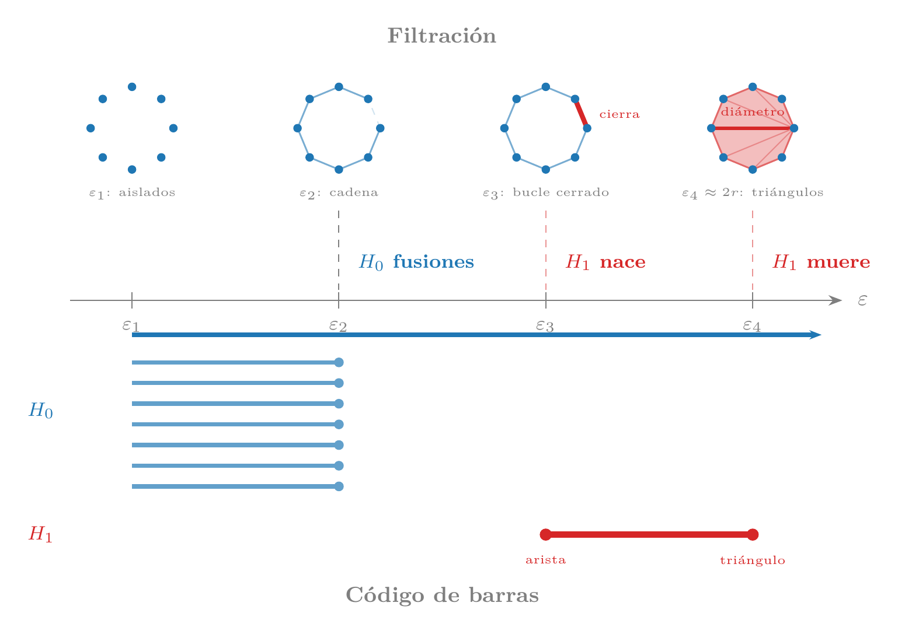
La Figura 5.3 conecta la geometría de la filtración con su firma topológica: cada evento en el complejo corresponde exactamente al extremo de una barra del código de barras.
- Dibuja un complejo con 4 vértices, 5 aristas y 1 triángulo. ¿El ciclo formado por las dos aristas no incluidas en el triángulo es un agujero real o es frontera? ¿Por qué?
- ¿Por qué calcular \(H_2\) para 5.000 puntos es inviable con la reducción estándar pero \(H_1\) es factible con lazy evaluation? Estima el número de tetraedros potenciales con \(n = 1.000\).
- Pídele a un LLM: «Dos ciclos homólogos representan el mismo agujero. ¿Puede haber dos ciclos homólogos que no compartan ninguna arista? Dame un ejemplo concreto en un complejo simplicial simple.»
5.3 Diagrama de persistencia y código de barras
Los pares (nacimiento, muerte) que produce la homología persistente se visualizan de dos formas equivalentes: el código de barras y el diagrama de persistencia.
En el código de barras, cada característica es una barra horizontal \([b_i, d_i]\) sobre el eje de la escala \(\varepsilon\). La longitud de la barra — la persistencia \(d_i - b_i\) — mide cuánto tiempo sobrevive la característica al variar la escala. Barras largas son señal; barras cortas son ruido: una arista accidental que cierra brevemente un ciclo antes de que más aristas lo rellenen. En la Receta 1 vimos exactamente este contraste: 147 barras cortas (puntos dentro de cada cluster que se conectan entre sí) y 2 barras largas (la separación entre los tres grupos reales).
En el diagrama de persistencia, cada característica es un punto con coordenadas \((b_i, d_i)\) en el plano. Como toda característica muere después de nacer (\(d_i \geq b_i\)), todos los puntos caen sobre o encima de la diagonal \(y = x\). La persistencia es la distancia del punto a la diagonal: un punto justo encima es ruido; un punto alejado es señal. En \(H_0\), la última componente conexa que queda nunca muere — su punto tiene coordenada de muerte \(+\infty\) y se dibuja en el borde superior del diagrama.
Las dos representaciones codifican exactamente la misma información. Los códigos de barras son más naturales para leer escalas concretas de nacimiento y muerte; los PDs son más compactos cuando hay muchas características y facilitan la comparación estadística que veremos en la siguiente sección.
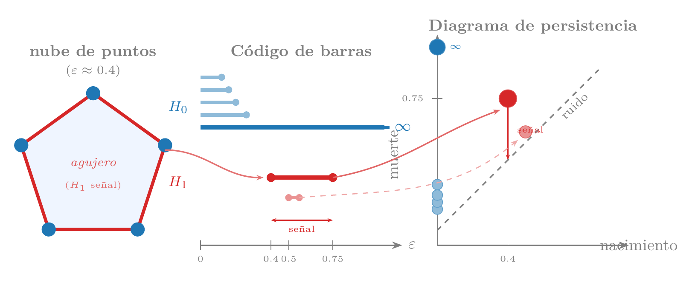
- Un PD tiene tres puntos: \((0.2, 0.8)\), \((0.1, 0.15)\) y \((0.3, +\infty)\). ¿Cuántas componentes conexas y cuántos ciclos describe? ¿Cuál es la persistencia de cada característica?
- ¿Por qué los PDs pueden tener puntos de multiplicidad mayor que uno? ¿Qué significa que dos características compartan exactamente el mismo par \((b, d)\)?
5.4 Estabilidad y distancia bottleneck
En la Receta 3 vimos que rotar, escalar o añadir ruido gaussiano moderado apenas cambia el diagrama de persistencia. Esto no fue una coincidencia ni un artefacto de ese dataset concreto: existe un teorema que lo garantiza, y esa garantía es lo que convierte al TDA de una curiosidad matemática en una herramienta fiable para datos reales.
Para enunciar el teorema necesitamos medir cuánto se parecen dos PDs. La distancia bottleneck \(W_\infty(D_1, D_2)\) entre dos diagramas es el coste del emparejamiento óptimo entre sus puntos: cada punto de \(D_1\) se empareja con un punto de \(D_2\) o con su proyección sobre la diagonal (que representa «este punto es tan cercano a la diagonal que puede ignorarse»), minimizando el máximo de las distancias \(\ell^\infty\) de todos los pares:
\[W_\infty(D_1, D_2) = \inf_{\gamma} \sup_{p \in D_1} \|p - \gamma(p)\|_\infty\]
donde el ínfimo es sobre todas las biyecciones \(\gamma\) entre \(D_1 \cup \Delta\) y \(D_2 \cup \Delta\), siendo \(\Delta\) la diagonal (usada para absorber puntos sin pareja). Intuitivamente: \(W_\infty\) es la distancia que tiene que recorrer el punto que más se desplaza en el emparejamiento óptimo.
El teorema de estabilidad (Cohen-Steiner, Edelsbrunner y Harer, 2007) afirma que una perturbación pequeña de los datos produce una perturbación pequeña del diagrama. Usando la distancia de Hausdorff \(d_H(X, Y) = \max\!\bigl(\sup_{x \in X} \inf_{y \in Y} d(x,y),\; \sup_{y \in Y} \inf_{x \in X} d(x,y)\bigr)\) entre dos nubes de puntos:
\[W_\infty\bigl(D(X),\, D(Y)\bigr) \leq 2\, d_H(X, Y)\]
Si dos nubes están a distancia de Hausdorff \(\delta\) — cada punto de \(X\) tiene un vecino en \(Y\) a distancia como mucho \(\delta\), y viceversa —, entonces sus diagramas difieren como mucho en \(2\delta\) en la métrica bottleneck. Conviene pensar en tres situaciones distintas, porque la cota se comporta de forma muy diferente en cada una.
Ruido gaussiano moderado. Un ruido gaussiano de desviación \(\sigma\) desplaza cada punto en promedio \(\sigma\), pero la distancia de Hausdorff depende del desplazamiento máximo: con \(n\) puntos, el peor desplazamiento escala como \(\sigma\sqrt{2 \log n}\), que crece muy lentamente. La cota queda ajustada y la perturbación del diagrama es proporcional a \(\sigma\): exactamente lo que observamos en la Receta 3.
Ruido de colas pesadas. Con distribuciones Cauchy, Lévy o Pareto de exponente pequeño, el máximo de \(n\) muestras crece como \(n^{1/\alpha}\) — polinomialmente en lugar de logarítmicamente. Tarde o temprano aparece un punto extremo que eleva la distancia de Hausdorff sin límite razonable, haciendo la cota trivialmente grande. Es el mismo fenómeno que hace fallar a la media aritmética: la operación \(\sup\) en la distancia de Hausdorff, igual que el promedio en estadística clásica, no es robusta frente a valores extremos. La solución análoga a usar la mediana es la filtración DTM (distancia a la medida), que promedia sobre los \(k\) vecinos más cercanos de cada punto en lugar de depender del más lejano.
Outliers como señal. Hay un tercer caso, conceptualmente distinto: un punto que está genuinamente lejos del resto no porque sea ruido, sino porque representa un evento real — una anomalía de red, un fallo mecánico, una transacción fraudulenta. Aquí el teorema «falla» en el sentido contrario: la barra larga que genera ese punto es la señal, no un artefacto. La analogía con el análisis estadístico es directa: un analista que descarta outliers de forma automática antes de ajustar un modelo puede estar eliminando precisamente la observación más informativa del dataset — el valor extremo que delata una crisis financiera, un sensor defectuoso o un fallo latente. En TDA ocurre lo mismo: la barra persistente puede ser el hallazgo central del análisis, o puede deberse a un error de medida puntual (un bit flip, una lectura fuera de rango). El diagrama de persistencia por sí solo no puede distinguir entre los dos casos; la herramienta correcta, como vimos en la Receta 4, es usar los ciclos representativos para localizar el punto responsable de la barra sospechosa e inspeccionarlo con criterio de dominio antes de decidir.

- Dos nubes tienen distancia de Hausdorff \(\delta = 0.1\). ¿Cuánto puede cambiar como máximo la persistencia de un ciclo en su diagrama?
- ¿Por qué un único outlier puede crear una barra larga que imita señal real? ¿Qué herramienta del capítulo usarías para decidir si es señal o artefacto?
- Tu dataset de sensores industriales tiene lecturas anómalas que siguen una distribución de Pareto de exponente 0.8. ¿Por qué la garantía del teorema de estabilidad es menos útil aquí que con ruido gaussiano? ¿Qué propiedad de la filtración DTM alivia el problema?
5.5 Densidad de datos y dimensión intrínseca: ¿cuándo es viable el TDA?
El resultado de la sección anterior — la estabilidad garantiza que una pequeña perturbación produce un pequeño cambio en el diagrama — no dice nada sobre cuántos puntos hacen falta en primer lugar. Esa pregunta tiene una respuesta matemática precisa, y su consecuencia práctica es lo que distingue los dominios donde el TDA funciona bien de aquellos donde no.
El resultado clásico de reconstrucción topológica (Niyogi, Smale y Weinberger, 2008) establece que para recuperar fielmente los \(\beta_k\) de una variedad \(M\) de dimensión intrínseca \(d_I\) y reach \(\tau\) basta con
\[n = O\!\left(\frac{1}{\tau^{d_I}}\right)\]
puntos muestreados uniformemente. El reach \(\tau\) es la distancia mínima a la que la variedad se «dobla sobre sí misma» — inversamente proporcional a la curvatura máxima. Lo crucial es que el exponente es \(d_I\), la dimensión intrínseca del objeto, no la dimensión ambiente \(D\) en la que viven los datos. Que los datos de texto vivan en \(\mathbb{R}^{384}\) no importa: lo que importa es que la variedad semántica tenga dimensión intrínseca \(d_I \sim 10\)–\(30\).
La Tabla 5.1 aplica la fórmula a los dominios más habituales con \(\tau = 0.5\) — una escala de curvatura razonable para embeddings normalizados — y permite comparar la disponibilidad habitual de datos con el mínimo que exige la teoría:
| Dominio | \(d_I\) típica | \(n\) requerido (\(\tau{=}0.5\)) |
|---|---|---|
| Series temporales / atractores | 2–8 | 4–256 |
| Sensores industriales | 3–10 | 8–\(10^3\) |
| Cantos de pájaros | 5–15 | 32–\(3\times10^4\) |
| Audio / música | 5–20 | 32–\(10^6\) |
| Cetáceos (vocalizaciones) | 5–20 | 32–\(10^6\) |
| Genómica (scRNA-seq) | 10–30 | \(10^3\)–\(10^9\) |
| Imágenes naturales | 10–50 | \(10^3\)–\(10^{15}\) |
| Texto / lenguaje | 10–30 | \(10^3\)–\(10^9\) |
| Proteínas (estructura 3D) | 30–100+ | \(10^9\)–\({\gg}10^{30}\) |
| Tabular con features independientes | \(d_I \approx D\) | prohibitivo |
La tabla asume que los datos llegan al algoritmo de TDA en la dimensión adecuada. En la práctica, muchos dominios de la mitad inferior — lenguaje, genómica, imágenes — tienen \(D \gg d_I\): los embeddings viven en \(\mathbb{R}^{100}\) o \(\mathbb{R}^{50000}\), aunque la variedad subyacente tenga dimensión intrínseca de diez a treinta. A dimensiones altas, las distancias euclídeas entre puntos se concentran — todos los puntos tienden a estar a distancias similares — y la filtración de Vietoris-Rips pierde resolución antes de que la restricción de \(n\) sea el cuello de botella. UMAP resuelve este problema proyectando los datos a \(\mathbb{R}^d\) con \(d \ll D\) mientras preserva la estructura topológica local, de modo que ripser y Mapper operan sobre distancias informativas con \(d_I\) como dimensión efectiva — exactamente lo que la fórmula de Niyogi et al. supone (véase Sección 5.9).
- Las Recetas 5 y 6 del capítulo trabajan con conjuntos de entre 200 y 2.000 embeddings de texto. Usando la Tabla 5.1 y asumiendo \(d_I \approx 15\), ¿es ese rango de \(n\) suficiente según la fórmula de Niyogi et al.? ¿Qué tipo de afirmaciones siguen siendo defensibles?
- Un análisis aplica ripser directamente a 5.000 embeddings de texto en \(\mathbb{R}^{384}\) y obtiene diagramas de persistencia sin estructura notable. El mismo corpus reducido a \(\mathbb{R}^{10}\) con UMAP muestra una componente conexa clara en \(H_0\). ¿Qué fenómeno explica la diferencia? ¿La restricción de \(n\) es el problema en este caso?
- Un colega propone aplicar TDA a una tabla de transacciones bancarias con 150 columnas numéricas independientes entre sí. Usando la Tabla 5.1, explica por qué el \(n\) requerido es prohibitivo y qué herramienta alternativa recomendarías.
5.6 Paisaje de persistencia y vectorización
Los diagramas de persistencia son potentes para la visualización, pero tienen una limitación práctica: no son vectores. No se pueden promediar directamente, no admiten regresión ni clasificación estándar, y calcular estadísticas sobre una colección de PDs es no trivial porque el «espacio de PDs» tiene una geometría irregular bajo la distancia bottleneck. Para conectar el TDA con el resto del arsenal estadístico y de aprendizaje automático necesitamos vectorizar los diagramas.
La herramienta más rigurosa para hacerlo es el paisaje de persistencia (persistence landscape), introducido por Bubenik en 2015. Para un PD con puntos \((b_i, d_i)\), se define una función «tienda de campaña» centrada en cada punto:
\[\Lambda_i(t) = \max\!\left(0,\; \min\bigl(t - b_i,\; d_i - t\bigr)\right)\]
Esta función vale cero fuera de \([b_i, d_i]\), sube linealmente desde \(b_i\) hasta el punto medio \(m_i = (b_i + d_i)/2\) y baja simétricamente hasta \(d_i\). Su valor máximo es exactamente la mitad de la persistencia: \(\Lambda_i(m_i) = (d_i - b_i)/2\).
El \(k\)-ésimo nivel del paisaje es el \(k\)-ésimo máximo de todas las tiendas:
\[\lambda_k(t) = \text{$k$-ésimo mayor valor entre} \;\{\Lambda_i(t) : i = 1, \ldots, N\}\]
Para \(k=1\), \(\lambda_1(t)\) es la tienda más alta en cada punto \(t\) — la característica más persistente a esa escala. Para \(k=2\), la segunda más alta, y así sucesivamente. Si en un punto \(t\) hay menos de \(k\) tiendas activas, \(\lambda_k(t) = 0\).
¿Por qué este diseño? Porque las funciones \(\lambda_k\) viven en un espacio de Banach: tienen norma bien definida y sus sumas y escalados siguen siendo paisajes. Esto permite calcular el paisaje medio de una colección de diagramas simplemente promediando las funciones punto a punto — algo imposible con los diagramas de persistencia directamente, cuyo espacio no admite promedio en general. Sobre ese espacio vectorial se pueden aplicar herramientas estadísticas estándar: test \(t\), regresión, y, sobre todo, bootstrap.
Banda de variabilidad (bootstrap). Dados \(n\) datos, se generan \(B\) remuestras con reemplazamiento y se calcula el paisaje de cada una. Para cada escala \(t\) se dispone de \(B\) valores \(\{\lambda_1^{(b)}(t)\}_{b=1}^{B}\); el percentil 5 y el percentil 95 de esos valores forman la banda bootstrap:
\[Q_{0.05}\!\bigl(\lambda_1^{(b)}(t)\bigr) \;\leq\; \bar{\lambda}_1(t) \;\leq\; Q_{0.95}\!\bigl(\lambda_1^{(b)}(t)\bigr)\]
Esta banda responde a: ¿el pico es estable si recojo más datos de la misma fuente? Un pico que sobresale claramente por encima del percentil 95 es reproducible; uno que apenas lo roza puede ser un artefacto de esa muestra concreta. La banda cuantifica precisión, no significación: no distingue señal real de ruido geométrico, solo mide cuánto varía la señal observada entre remuestras.
Línea nula (test de permutaciones). Para saber si hay señal topológica real hace falta una pregunta distinta: ¿qué paisaje observaría si los datos no tuviesen ninguna estructura? Para responderla se construye una distribución nula: se generan \(B\) datasets permutados — por ejemplo, aleatorizando las coordenadas de cada punto de forma independiente, lo que destruye la geometría conjunta pero conserva las distribuciones marginales — se calcula el paisaje de cada uno, y se toma el percentil 95 de esos paisajes nulos como línea nula \(\ell_{\text{nulo}}(t)\). Un pico en \(\bar{\lambda}_1(t)\) es estadísticamente significativo solo si supera \(\ell_{\text{nulo}}(t)\), igual que un estadístico supera el valor crítico en un test de permutaciones clásico.
Las dos herramientas responden preguntas distintas: la banda bootstrap mide precisión; la línea nula mide significación. Esto es exactamente la distinción que aplicamos en Sección 5.2.1 para decidir cuántas ramas tiene el árbol de la ciencia: la banda confirma que el segundo componente \(H_0\) es estable entre remuestras, y la línea nula confirma que su altura supera lo esperable por azar geométrico.
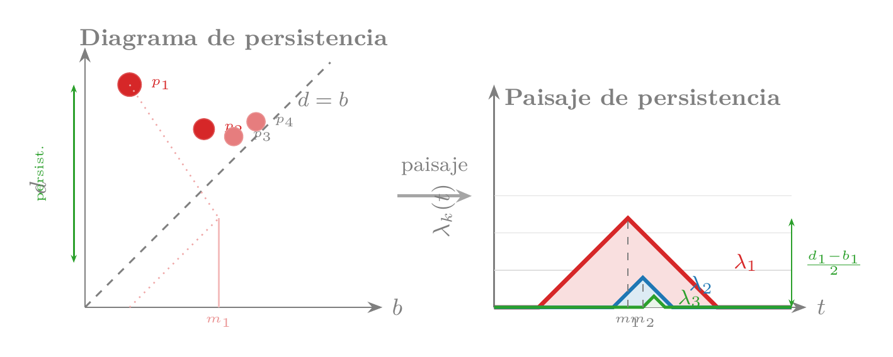
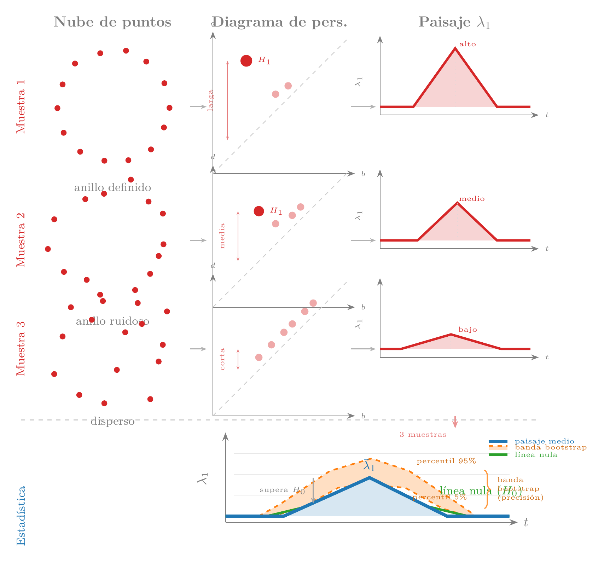
Los paisajes y el teorema de estabilidad proveen las bases para construir descriptores robustos. La siguiente pieza — Mapper — responde a una pregunta distinta: en lugar de contar cuántos agujeros hay, construye un grafo que resume la forma global de los datos en un formato directamente interpretable por un analista de dominio.
- Un PD tiene dos puntos: \((0, 2)\) y \((1, 3)\). Calcula \(\lambda_1(1.5)\) y \(\lambda_2(1.5)\).
- ¿Por qué el paisaje permite calcular intervalos de confianza por bootstrap mientras que hacerlo directamente con los puntos del PD es más difícil?
- Tu paisaje medio \(\bar{\lambda}_1\) tiene un pico alto en \(t = 1.2\) que supera el percentil 95 de la banda bootstrap. Un colega dice que eso es suficiente para concluir que hay una estructura topológica real. ¿Está en lo correcto? ¿Qué herramienta adicional necesitarías y cómo la construirías?
- Pídele a un LLM: «¿Qué ventajas tiene el paisaje de persistencia frente a usar simplemente las 10 persistencias más largas del diagrama como vector de features?»
5.7 Mapper: cubiertas y nervios
Mapper, introducido por Singh, Mémoli y Carlsson en 2007, responde a una pregunta distinta a la homología persistente: en lugar de contar agujeros y cavidades, construye un grafo que resume la forma global de los datos de modo que cada nodo sea interpretable en términos del dominio. En las Recetas 5 y 6 lo usamos para descubrir el viaje del héroe en novelas clásicas y el árbol de la ciencia en arXiv. Aquí explicamos por qué funciona a partir de cuatro pasos.
Paso 1: función lente. Se elige una función \(f: X \to \mathbb{R}^d\) (típicamente \(d=1\) o \(d=2\)) que proyecta los datos sobre un eje de interés. La lente determina qué aspecto de la estructura destaca: en la Receta 5 fue la posición narrativa (primer componente PCA); en la Receta 6, las coordenadas UMAP. Una lente de densidad agrupa por concentración local; una lente de varianza máxima agrupa por distancia al centroide; una lente de tiempo narrativo agrupa por posición en la historia.
Paso 2: cubierta. El rango de \(f\) se divide en \(m\) intervalos solapados con porcentaje de solapamiento \(p\). Por ejemplo, con \(m=5\) sobre el intervalo \([0,1]\) y \(p=30\%\), la cubierta tiene cinco intervalos que comparten un 30% de su longitud con sus vecinos. Los puntos que caen en más de un intervalo son los que conectarán nodos en el grafo final.
Paso 3: pull-back y clustering local. Para cada intervalo \(U_i\), se extraen los puntos \(f^{-1}(U_i)\) y se aplica un algoritmo de clustering — tipicamente DBSCAN o enlace simple — solo sobre ellos. Cada cluster se convierte en un nodo del grafo. Trabajar sobre subconjuntos locales permite capturar la geometría fina del espacio sin que el ruido global la distorsione.
Paso 4: complejo nervio. Se añade una arista entre dos nodos si sus conjuntos de puntos tienen al menos un elemento en común. Ese solapamiento solo puede ocurrir entre clusters de intervalos adyacentes que se solapen en la cubierta — así la arista refleja una transición continua en el espacio, no similitud global arbitraria. El resultado es el complejo nervio de la cubierta.
El lema del nervio garantiza, bajo condiciones de regularidad en la cubierta, que el nervio tiene la misma homotopía que el espacio original: mismo número de componentes, ciclos y cavidades. En la práctica esas condiciones rara vez se verifican con datos reales, pero el nervio captura fielmente la topología global cuando los parámetros están bien elegidos.
Los dos parámetros de la cubierta — \(m\) (resolución) y \(p\) (solapamiento) — controlan la granularidad del grafo. Un \(m\) pequeño colapsa estructuras distintas; un \(m\) grande sobreajusta al ruido local. Un \(p\) bajo produce grafos desconectados; un \(p\) alto produce grafos densos donde se pierden los ciclos. La práctica habitual es explorar una cuadrícula \((m, p)\) y buscar estructuras robustas que aparezcan en múltiples configuraciones.

- En la Receta 6, Mapper con lente UMAP produce un grafo árbol. ¿Qué estructura esperarías si cambiases la lente por la densidad local (número de vecinos dentro de radio 0.3)?
- ¿Por qué el solapamiento entre intervalos es necesario para que el grafo nervio pueda contener ciclos? Sin solapamiento, ¿qué tipo de grafo se obtiene siempre?
5.8 Validación del nervio Mapper
¿Cuándo es fiel el nervio? El lema del nervio es una garantía teórica: si la cubierta \(\mathcal{U}\) es buena — toda intersección no vacía de miembros es contráctil —, el nervio \(N(\mathcal{U})\) es homotópicamente equivalente a \(\bigcup \mathcal{U}\) — es decir, uno puede deformarse continuamente en el otro, como una taza de café que se aplana hasta convertirse en un disco, preservando los agujeros pero no las distancias —, con los mismos \(\beta_k\) para todo \(k\).
En datos finitos esa condición no se puede verificar exactamente, y no existe una forma de verificar el nervio respecto la topología del espacio subyacente — cualquier reducción dimensional previa que se usara como referencia introduciría sus propias distorsiones.
La pregunta «¿es fiel este nervio?» tiene dos niveles de respuesta operativa:
Validación interna (sin referencia externa). Mide si las características topológicas del nervio son reproducibles y significativas en sí mismas, sin asumir nada sobre la topología real:
Consistencia del recuento: calcular la homología del nervio — tratado como complejo simplicial con peso de arista \(= 1 - \text{Jaccard}(C_i, C_j)\), donde el índice de Jaccard \(|C_i \cap C_j|/|C_i \cup C_j|\) mide qué fracción de los puntos que aparecen en cualquiera de los dos clusters aparece en ambos: vale 1 si los clusters son idénticos y 0 si no comparten ningún punto, así que \(1 - \text{Jaccard}\) es una distancia natural entre conjuntos — y estimar un intervalo de confianza bootstrap sobre cada \(\beta_k\) (\(B = 30\) remuestras del 80% de los puntos). Si el recuento es reproducible, la estructura no es un artefacto de una muestra particular.
Banda bootstrap del paisaje: vectorizar los diagramas de persistencia del nervio mediante el paisaje (Sección 5.6) y calcular la banda pointwise 5%–95% sobre las mismas \(B\) remuestras. Una banda estrecha indica que el paisaje completo es reproducible, no solo el recuento.
Línea nula: permutar las coordenadas de cada punto independientemente y recalcular el paisaje; repetir \(B' = 200\) veces y tomar el percentil 95 como umbral. Solo las características del paisaje que lo superan son estadísticamente significativas frente a ruido geométrico aleatorio.
Sensibilidad a parámetros: los pasos 1–3 miden sensibilidad a los datos (¿cambia el resultado si observo otro 80% del corpus?), pero el nervio Mapper depende también de dos decisiones del analista — el número de cubos \(m\) y el solapamiento \(p\). El paso 4 comprueba que el vector \((\beta_0, \beta_1)\) sea constante en una cuadrícula de valores vecinos. El criterio para elegir el rango no es arbitrario: se varía \(m\) lo suficiente para que el número de nodos cambie de forma apreciable — típicamente \(\pm 20\%\) del valor elegido — y \(p\) en pasos de \(0.1\), que es el salto mínimo con efecto observable en la conectividad del grafo. Si la conclusión topológica es robusta en esa vecindad, no depende de la elección puntual del analista. Si algún \(\beta_k\) cambia, la conclusión debe reportarse con precaución.
Los cuatro primeros pasos validan los invariantes topológicos (\(\beta_k\)). Pero el grafo Mapper contiene más información que esos invariantes — la pertenencia de cada paper a cada nodo, los pesos Jaccard de las aristas, la distribución de tamaños — y dos grafos pueden tener los mismos \(\beta_k\) y diferir en toda esa estructura combinatoria. Los pasos 5 y 6 validan esa parte:
Estabilidad de membresía: el paso 1 confirmaba que el recuento de componentes y ciclos era reproducible, pero no que los nodos del nervio identifiquen siempre los mismos puntos. Dos grafos pueden tener idénticos \(\beta_k\) y, sin embargo, particionar los papers de forma completamente distinta. Aquí preguntamos lo segundo: si reconstruimos el nervio sobre un 80% del corpus, ¿cada nodo del nervio base tiene un homólogo claro en ese nervio bootstrap?
La medida natural de parecido entre dos conjuntos de papers \(C\) y \(C'\) es el índice de Jaccard, \(|C \cap C'|/|C \cup C'|\): 1 si son idénticos, 0 si no comparten ningún paper, valores intermedios si se solapan parcialmente. Para cada nodo \(C_i\) del nervio base buscamos su mejor pareja en el nervio bootstrap \(b\): \[J_i^{(b)} = \max_{C' \in N^{(b)}} \frac{|C_i \cap C'|}{|C_i \cup C'|}\]
El máximo sobre todos los nodos del bootstrap es la pregunta «¿hay algún nodo, el que sea, que represente esencialmente el mismo subconjunto que \(C_i\)?». Promediando sobre todos los nodos base y todas las remuestras se obtiene \(\bar{J}\), una métrica global de reproducibilidad de la partición.
Falta una referencia para decidir cuándo \(\bar{J}\) es alto. La construimos rompiendo deliberadamente la geometría: si permutamos cada dimensión del embedding de forma independiente, los valores marginales se conservan pero la correlación conjunta entre dimensiones desaparece — es decir, el embedding deja de codificar ninguna estructura geométrica real. Aplicar el pipeline completo (lente + Mapper + bootstrap) sobre los datos permutados y repetir varias veces produce una distribución de \(\bar{J}\) bajo la hipótesis de que no hay nada que detectar. El percentil 95 de esa distribución, \(S_{0.95}^J\), es el umbral: \(\bar{J} > S_{0.95}^J\) significa que los nodos identifican subconjuntos reproducibles más allá de lo esperable por azar combinatorio.
Reproducibilidad de pares: cada arista \((C_u, C_v)\) del nervio base codifica una afirmación verificable — «estos dos clusters están topológicamente adyacentes», es decir, comparten al menos un paper en la zona de solapamiento de la cubierta. Esa afirmación se descompone en una afirmación más fina sobre los \(|C_u| \times |C_v|\) pares de papers que la sustentan: si \(i \in C_u\) y \(j \in C_v\), el par \((i, j)\) es un vecino topológico según el nervio base. Si la estructura es real, esos pares deberían seguir siendo vecinos cuando reconstruimos el nervio sobre una muestra distinta del corpus.
Para cada bootstrap \(b\) y cada par de papers \((i, j)\) asociado a una arista del nervio base, distinguimos dos casos:
- Testeable: ambos papers cayeron en la submuestra \(b\) (de lo contrario no podemos comprobar nada sobre ellos).
- Reproducido: además de testeable, el nodo del bootstrap que contiene a \(i\) está conectado por una arista al que contiene a \(j\).
Si \(k_b\) es el número de pares reproducidos y \(n_b\) el de testeables en el bootstrap \(b\), la tasa de persistencia es \[\bar{S} = \mathbb{E}_b\!\left[\frac{k_b}{n_b}\right]\]
— la fracción media de afirmaciones de adyacencia del nervio base que sobreviven a un cambio de muestra. Es la pregunta análoga al paso 5, pero aplicada a las aristas en lugar de a los nodos: el paso 5 valida la partición; el paso 6 valida la conectividad.
El umbral nulo \(S_{0.95}^S\) se construye igual que \(S_{0.95}^J\): permutación de coordenadas para destruir la geometría, mismo pipeline completo, percentil 95 de los \(\bar{S}\) resultantes. La interpretación es la misma: \(\bar{S} > S_{0.95}^S\) indica que la conectividad del grafo refleja adyacencia geométrica real, no la combinatoria que cualquier grafo del mismo tamaño produciría por azar.
La densidad media \(\rho\) del nervio bootstrap — la fracción de los pares posibles de nodos que tienen arista — sirve como referencia complementaria. Bajo la hipótesis de aristas colocadas al azar manteniendo el mismo número total, dos nodos cualesquiera estarían conectados con probabilidad \(\rho\), así que \(\rho\) es la tasa de reproducibilidad esperable por azar combinatorio puro y el exceso \(\bar{S} - \rho\) cuantifica el tamaño del efecto.
Los pasos 1–4 miden robustez topológica; los pasos 5 y 6 miden robustez combinatoria. Un nervio fiable supera los seis filtros: los \(\beta_k\) son reproducibles, el paisaje es significativo, los hiperparámetros no cambian la conclusión, la partición es estable en composición y la conectividad del grafo se replica punto a punto entre remuestras.
El protocolo se aplica con maxdim=1, cubriendo \(H_0\) y \(H_1\). \(H_2\) es estructuralmente nula cuando la lente es 2D: la cubierta es una lámina, y cerrar esa lámina sobre sí misma para encerrar un volumen requeriría una lente de al menos 3D. Añadir maxdim=2 introduce un coste \(O(n_{\text{nodos}}^4)\) — con 100 nodos, \(\binom{100}{4} \approx 4 \times 10^6\) tetraedros por iteración bootstrap — sin beneficio esperado. \(H_3\) y superior son igualmente inaccesibles en tiempo razonable.
Validación externa (con etiquetas independientes). Cuando existen etiquetas auxiliares no usadas en la construcción del nervio — categorías arXiv, autorías, citas, anotaciones manuales — se puede comprobar si el nervio captura estructura externa real con tests cuantitativos. Tres son operativamente útiles:
Auditoría de pureza de nodos: se muestrean \(m\) nodos del nervio sin reposición y se calcula la pureza media respecto a la etiqueta de referencia, \[\hat{p} = \frac{1}{m}\sum_{i=1}^m \frac{\max_c |C_i \cap A_c|}{|C_i|},\] donde \(C_i\) es el cluster \(i\)-ésimo y \(A_c\) son las clases de la etiqueta. La incertidumbre al 95% es \(\pm 1.96\sqrt{\hat{p}(1-\hat{p})/m}\); usando \(\hat{p} = 0.5\) como cota conservadora (\(p(1-p)\) es máximo en \(p=0.5\), independientemente de la pureza real): con \(m = 100\) se obtiene \(\pm 0.10\), con \(m = 200\), \(\pm 0.07\). Para detectar una diferencia de 10 puntos de pureza entre dos nervios con \(\alpha = 0.05\) y potencia 0.8, un test de proporciones de dos muestras requiere \(m \approx 60\) nodos por nervio.
Información mutua normalizada ajustada (ANMI): la NMI tiene un sesgo positivo bajo la hipótesis nula (incluso sin ninguna estructura real, dos particiones aleatorias tienen \(\mathbb{E}[\text{NMI}] > 0\)) que crece con el número de clusters \(k\) y de etiquetas \(r\): \(\mathbb{E}[I] \approx (k-1)(r-1)/(2N\ln 2)\). La NMI ajustada (Adjusted NMI, ANMI) de Vinh et al. (2010) sustrae este sesgo con una fórmula cerrada basada en la distribución hipergeométrica de los solapamientos \(|C_i \cap L_j|\) bajo independencia: \[\text{ANMI} = \frac{I(\mathcal{C};\mathcal{L}) - \mathbb{E}[I]}{[H(\mathcal{C})+H(\mathcal{L})]/2 - \mathbb{E}[I]},\] donde \(\mathbb{E}[I]\) se calcula analíticamente fijando los marginales \(|C_i|\) y \(|L_j|\). El resultado satisface \(\mathbb{E}[\text{ANMI}] = 0\) bajo independencia y \(\text{ANMI} = 1\) bajo coincidencia perfecta. La varianza residual bajo la hipótesis nula H₀ decrece como \(O(kr/N\log N)\); con \(N=8085\), \(k \approx 100\) y \(r \approx 20\) categorías arXiv, \(\sigma \approx 0.016\), así que cualquier \(\text{ANMI} > 0.05\) es estadísticamente significativo.
Correlación de aristas con relaciones externas: para cada arista \((i, j)\) del nervio se compara su peso Jaccard \(w_{ij}\) con la tasa de co-ocurrencia externa \(r_{ij}\) entre los papers de \(C_i\) y \(C_j\) — por ejemplo, fracción de pares con autor común, fracción con cita directa, o fracción con categoría arXiv compartida. Se calcula la correlación de Spearman \(\rho\) entre los dos vectores \(\mathbf{w} = (w_{ij})\) y \(\mathbf{r} = (r_{ij})\) indexados sobre todas las aristas del nervio. La significación de \(\rho\) se evalúa con el estadístico exacto bajo H₀ (\(\rho = 0\)): \[t = \rho\sqrt{\frac{n-2}{1-\rho^2}} \sim t_{n-2},\] donde \(n\) es el número de aristas del nervio. Con \(n \approx 200\)–\(300\) aristas, el umbral al 95% es \(\rho_c \approx 0.14\); con \(n = 100\), sube a \(\rho_c \approx 0.20\). No se necesita bootstrap para la significación — solo para el intervalo de confianza del propio \(\rho\) si se quiere comparar dos nervios. Una \(\rho > \rho_c\) positiva es evidencia de que las conexiones del nervio reflejan relaciones reales del dominio, no solo geometría en el espacio de embeddings.
Ningún test individual prueba fidelidad topológica en sentido estricto, pero la combinación acota el espacio de explicaciones: un nervio que pasa los tres tests captura estructura externa que no se reduce ni a azar ni a artefacto del embedding. En la Receta 7 se verifica el protocolo interno con una topología conocida (\(\beta_1 = 2\)); en la Receta 8 se aplica el protocolo interno y se discute cómo aplicarían estos tres tests externos al corpus arXiv usando las propias categorías como referencia.
- Un nervio pasa los cuatro filtros topológicos (pasos 1–4) pero falla el paso 5: \(\bar{J} = 0.3\) en estabilidad de membresía. ¿Qué significa esto en términos prácticos? ¿Es válida la conclusión sobre \(\beta_k\)? ¿Qué afirmaciones del análisis quedan invalidadas?
- Diseña la validación externa completa para el UMAP-nervio del árbol de la ciencia usando las categorías arXiv top-level como etiqueta de referencia. Especifica: \(m\) nodos a auditar para detectar diferencia de 10pp con el PCA-nervio, número de permutaciones para el test NMI, y qué relación externa usarías para la correlación de aristas (paso 3).
- La validación externa con categorías arXiv tiene un sesgo conocido: un mismo paper puede pertenecer a varias categorías (cs.LG y stat.ML, por ejemplo) y los autores asignan las etiquetas a posteriori. ¿Cómo afecta esto a la pureza máxima posible? ¿Qué interpretación cuidadosa hay que hacer del valor \(\hat{p}\) resultante?
5.9 UMAP y los complejos simpliciales difusos
En la Receta 7 vimos que UMAP preserva la topología mejor que PCA y t-SNE. Aquí explicamos por qué: UMAP es, internamente, un algoritmo de TDA que opera sobre complejos simpliciales difusos (fuzzy simplicial sets).
La construcción tiene tres fases:
1. Espacio métrico local. Para cada punto \(x_i\), UMAP define una métrica local donde la distancia a los vecinos se normaliza para que el \(k\)-ésimo vecino más cercano esté a distancia 1. Concretamente, para cada punto \(x_i\) con \(k\)-ésimo vecino a distancia \(\rho_i\), el peso de la arista a un vecino \(x_j\) es:
\[w_{ij} = \exp\left(-\frac{d(x_i, x_j) - \rho_i}{\sigma_i}\right)\]
donde \(\sigma_i\) se calibra para que \(\sum_j w_{ij} = \log_2(k)\). Esto produce un grafo ponderado donde cada punto tiene aproximadamente \(k\) vecinos «efectivos», independientemente de la densidad local. En zonas densas, \(\sigma_i\) es pequeño (solo los vecinos muy cercanos cuentan); en zonas dispersas, \(\sigma_i\) es grande (vecinos más lejanos también contribuyen).
2. Simetrización topológica. Los pesos \(w_{ij}\) y \(w_{ji}\) no son iguales (la métrica es local a cada punto). UMAP los simetriza con la fórmula:
\[\tilde{w}_{ij} = w_{ij} + w_{ji} - w_{ij} \cdot w_{ji}\]
Esta operación es la unión difusa (fuzzy union) de dos conjuntos simpliciales: «existe una arista si cualquiera de los dos puntos ve al otro como vecino». El resultado es un complejo simplicial difuso — un complejo de Vietoris-Rips ponderado con escala adaptativa por punto. Compárese con el VR estándar, que usa un único \(\varepsilon\) global: allí una arista existe (\(w = 1\)) o no (\(w = 0\)); aquí existe con un peso continuo entre 0 y 1.
3. Optimización de la representación. UMAP inicializa una configuración en \(\mathbb{R}^d\) (típicamente con Laplacian Eigenmaps o PCA) y construye el mismo tipo de complejo simplicial difuso sobre los puntos proyectados. La función objetivo es la entropía cruzada entre los dos complejos:
\[\mathcal{L} = \sum_{(i,j)} \left[ \tilde{w}_{ij} \log\frac{\tilde{w}_{ij}}{\hat{w}_{ij}} + (1 - \tilde{w}_{ij}) \log\frac{1 - \tilde{w}_{ij}}{1 - \hat{w}_{ij}} \right]\]
donde \(\hat{w}_{ij}\) son los pesos en baja dimensión. Minimizar \(\mathcal{L}\) fuerza a que la estructura de conectividad (qué puntos están topológicamente cerca) se preserve, no las distancias euclídeas per se.
5.9.1 Comparación con t-SNE
t-SNE (t-distributed Stochastic Neighbor Embedding) es otra técnica de reducción dimensional no lineal ampliamente usada para visualizar datos en dos o tres dimensiones. Al igual que UMAP, construye una representación de baja dimensión preservando las relaciones de vecindad local — pero lo hace de forma distinta, y esa diferencia tiene consecuencias topológicas importantes.
t-SNE minimiza la divergencia KL entre distribuciones de probabilidad condicionales de distancias. La diferencia clave es que la KL es asimétrica: penaliza mucho «poner lejos lo que estaba cerca» (preserva vecindades locales) pero poco «poner cerca lo que estaba lejos» (permite colapsos de estructura global). Esto significa que t-SNE puede destruir ciclos (al acercar puntos distantes que formaban el ciclo) o crear ciclos espurios (al separar puntos que eran intermedios). UMAP, al usar entropía cruzada simétrica sobre una estructura explícitamente topológica, preserva la conectividad global — y con ella, los ciclos y las componentes conexas que la homología persistente mide.
5.9.2 Consecuencia práctica
Cuando usamos UMAP como paso previo a ripser (Sección 2.7), no estamos «reduciendo dimensión y esperando que la topología sobreviva» — estamos explícitamente optimizando la preservación de la misma estructura simplicial que ripser va a analizar. Es la razón por la que UMAP + ripser es una combinación natural: sus objetivos matemáticos están alineados. Además, UMAP puede servir como función lente alternativa en Mapper: al preservar la estructura topológica global, produce cubrimientos más fieles que PCA para datos con geometría no lineal.
5.10 Takens y la reconstrucción de atractores
En la sección de Aplicaciones mencionamos la detección de la transición ictal en señales EEG sin asumir ningún modelo paramétrico. La clave estaba en que primero se reconstruye el atractor del sistema dinámico subyacente a partir de la propia señal y después se aplica ripser sobre ese atractor. Aquí explicamos cómo se hace esa reconstrucción.
El problema es el siguiente: disponemos de una única señal escalar \(s(t) \in \mathbb{R}\) — la lectura de un solo electrodo — pero el sistema nervioso que la genera tiene un estado que vive en un espacio de dimensión mucho mayor. ¿Cómo recuperar la geometría del atractor a partir de una sola coordenada?
La respuesta está en los retardos temporales. En lugar de quedarse con el valor instantáneo, se construye un vector de \(d\) valores espaciados \(\tau\) en el tiempo:
\[\Phi(t) = \bigl(s(t),\; s(t + \tau),\; s(t + 2\tau),\; \ldots,\; s(t + (d-1)\tau)\bigr) \in \mathbb{R}^d\]
Al variar \(t\), \(\Phi(t)\) traza una trayectoria en \(\mathbb{R}^d\). Si la señal es periódica, la trayectoria cierra sobre sí misma formando un círculo — y ripser detectará un ciclo persistente en \(H_1\). Si la dinámica es más compleja (un atractor de Lorenz), la trayectoria traza una forma con su propia firma topológica.
El teorema de Takens (1981) convierte esta observación en una garantía matemática: si \(d > 2D\), donde \(D\) es la dimensión del atractor original, entonces \(\Phi\) es genéricamente un embedding — una copia fiel del atractor, topológicamente idéntica al original. «Genéricamente» significa que la propiedad vale para casi todos los retardos \(\tau\) salvo un conjunto de medida cero; en la práctica es una condición muy fácil de cumplir.
Cómo elegir \(\tau\) y \(d\). Son los dos hiperparámetros del método. Si \(\tau\) es demasiado pequeño, \(s(t)\) y \(s(t+\tau)\) son casi idénticos y el embedding colapsa sobre la diagonal — toda la información queda concentrada en una línea. Si \(\tau\) es demasiado grande, los retardos son casi independientes y el embedding pierde la continuidad del atractor. El criterio estándar es el primer mínimo de la información mutua entre \(s(t)\) y \(s(t+\tau)\): el primer \(\tau\) donde el pasado ya no predice perfectamente el presente. Para la dimensión \(d\), el método de los falsos vecinos más cercanos calcula qué fracción de los vecinos en \(\mathbb{R}^d\) dejan de serlo al pasar a \(\mathbb{R}^{d+1}\); cuando esa fracción cae a cero, \(d\) es suficiente para desplegar el atractor sin pliegues espurios.
La equivalencia con TDA es directa: una señal periódica tiene atractor homeomorfo a un círculo (\(S^1\)), así que \(H_1\) tendrá exactamente un ciclo muy persistente. Una señal cuasiperiódica con dos frecuencias incomensurables \(f_1/f_2 \notin \mathbb{Q}\) tiene un atractor homeomorfo a un toro (\(T^2\)), con \(H_1\) de rango 2 y \(H_2\) de rango 1. Una señal caótica (Lorenz, Rössler) tiene un atractor fractal cuya firma topológica es más compleja y varía con los parámetros del sistema.
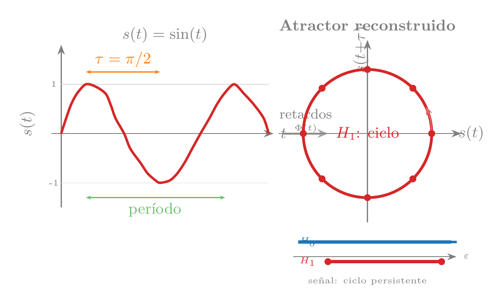
- Una señal tiene dos frecuencias incomensurables \(f_1\) y \(f_2\) (es decir, \(f_1/f_2 \notin \mathbb{Q}\)). ¿Cuántos ciclos persistentes esperas en \(H_1\) y cuántas cavidades en \(H_2\) de su atractor reconstruido? ¿Por qué?
- Si el retardo \(\tau\) elegido coincide exactamente con el período de la oscilación, ¿qué forma tiene \(\Phi(t)\)? ¿Qué detectaría
ripser? - Pídele a un LLM: «El teorema de Takens dice que la propiedad vale “genéricamente”. ¿Qué significa genéricamente en este contexto matemático, y por qué en la práctica no es una restricción problemática?»
Lecturas Recomendadas
Por un lado, la topología es un campo intuitivo: básicamente lidia con el espacio y las formas, algo que los humanos conocemos bien gracias a nuestro maravilloso sentido de la visión. Pero, desafortunadamente, entender un texto de topología o de análisis topológico de datos resulta especialmente abstracto y complejo.
Teniendo en cuenta esta contradicción fundamental, y la dificultad a la que nos enfrentamos, el punto de entrada más accesible al campo es Ghrist (2008): en doce páginas, Ghrist explica la homología persistente mediante la metáfora de los códigos de barras con una claridad excepcional — es la lectura recomendada antes de enfrentarse a ningún código. Para quien quiera profundizar en los fundamentos matemáticos y ver el TDA aplicado a problemas reales de datos, Carlsson (2009) es el artículo de referencia que lanzó el campo; accesible para alguien con álgebra lineal, sin exigir topología algebraica formal.
Para situar el TDA en el paisaje más amplio del análisis de datos — y entender cuándo y por qué usarlo frente a alternativas como el clustering, la estimación de densidad o la reducción de dimensión — Chazal y Michel (2021) es la referencia más orientadora: escrita explícitamente para científicos de datos sin formación en topología algebraica, explica cómo integrar la homología persistente y Mapper en pipelines de ML y en qué casos capturan algo que los métodos estadísticos convencionales no pueden.
Finalmente, el TDA y el aprendizaje profundo son campos hermanos que se están mezclando dentro del aprendizaje geométrico profundo: mientras el TDA estudia la topología de los datos, las arquitecturas del capítulo sobre aprendizaje profundo geométrico aprenden funciones que respetan esa misma estructura. Leer ambos capítulos en conjunto da una visión coherente de cómo la geometría y la topología están transformando el ML moderno.
Referencias
Soluciones
Con 4 clusters hay 3 fusiones tardías en \(H_0\) (una menos que el número de clusters). Si dos clusters están muy juntos, se fusionarán pronto (persistencia baja) y solo quedarán 2 fusiones realmente tardías — los clusters cercanos se comportan como uno solo a escalas grandes.
La respuesta del LLM debería describir: dado un conjunto de puntos, para cada valor de \(\varepsilon\) se conectan todos los pares a distancia \(\leq \varepsilon\) (y sus triángulos, tetraedros, etc.). Al aumentar \(\varepsilon\) de 0 a \(\infty\), se obtiene una secuencia anidada de complejos simpliciales — eso es la filtración. Compara con la Receta 1: los 150 puntos aislados (\(\varepsilon = 0\)) van fusionándose en clusters al crecer \(\varepsilon\).
No cambia significativamente. La persistencia del agujero en \(H_1\) depende de la existencia de un bucle cerrado, no de su forma. Una elipse y un círculo son topológicamente equivalentes (homeomorfos), así que el TDA ve el mismo agujero. La persistencia puede variar ligeramente por la geometría distorsionada, pero el agujero persiste.
Un «8» tiene dos agujeros: dos bucles cerrados que comparten un punto de cruce. Se esperarían 2 ciclos persistentes en \(H_1\), cada uno correspondiente a uno de los dos lóbulos. En la práctica, la persistencia de ambos dependerá del tamaño relativo de cada lóbulo y del ruido, pero la señal topológica será de dos agujeros bien separados de la diagonal.
El paisaje de \(H_1\) deja de superar el umbral del 95% aproximadamente cuando \(\sigma \geq 0.5\), es decir, cuando el ruido es del mismo orden que el radio del círculo (r = 1). Esto tiene sentido intuitivo: si la dispersión radial es comparable al tamaño de la estructura, los puntos ya no «recuerdan» que estaban sobre un anillo — la señal topológica se pierde en el ruido.
El TDA computa distancias euclídeas: con ruido \(\sigma\) en \(\mathbb{R}^d\), la distancia típica crece como \(\sigma\sqrt{2d}\), de modo que la señal del círculo (amplitud \(\sim R\)) queda progresivamente enterrada en las fluctuaciones de distancia. PCA trabaja con la matriz de covarianza: la dirección principal tiene autovalor \(\sigma^2 + R^2/2\), y las demás \(\sigma^2\); la brecha \(R^2/2 \approx 1.1\) no depende de \(d\). Pero éste es un escenario ideal para PCA (señal exactamente en dos coordenadas, ruido isotrópico); en datos reales la señal suele estar distribuida y PCA también degrada. El preprocesado con UMAP (Receta 7) reduce la dimensión antes de aplicar TDA, mitigando la concentración de medida.
Con dos anillos concéntricos,
ripserdebería detectar 2 ciclos altamente persistentes en \(H_1\). Los cociclos representativos correspondientes identificarán puntos sobre cada anillo por separado. Si los anillos son concéntricos (no se intersectan), los conjuntos de puntos no se solapan — cada ciclo representativo vivirá sobre un anillo distinto.Un cociclo representativo es una función definida sobre las aristas del complejo simplicial (asigna valores a aristas); un ciclo representativo es un conjunto de aristas que forman un bucle cerrado.
ripserdevuelve cociclos porque son más eficientes de calcular (se obtienen como subproducto del algoritmo de reducción de la matriz de borde) y porque las coordenadas de cociclo proveen información geométrica más rica. El ciclo se obtiene como dual del cociclo.Con una lente temporal, Mapper divide la narrativa en franjas de tiempo y agrupa por similitud dentro de cada franja. Como el solapamiento solo ocurre entre intervalos temporales contiguos, las aristas solo conectan nodos de momentos adyacentes — produciendo necesariamente una cadena (o algo cercano). La lente temporal asume linealidad y no puede detectar circularidad porque el principio y el final caen en intervalos distintos que jamás se solapan.
Con
n_cubesmuy bajo (2-3), el grafo tiene pocos nodos y \(\beta_1\) baja porque la resolución es insuficiente para crear aristas. Conperc_overlapmuy bajo (< 20%), los nodos se desconectan. Para la configuración por defecto (n_cubes=5,perc_overlap=0.4), los grafos son densos (\(\beta_1 \approx 35\)–48) para todas las novelas — la densidad es robusta y no específica del viaje del héroe.La similitud coseno directa entre el primer y último chunk es un test mucho más simple que no requiere construir el grafo Mapper. En general confirma el mismo resultado: los embeddings del principio y final de una novela no son más similares que los de dos pasajes aleatorios del mismo libro. La excepción es El Mago de Oz, donde la repetición literal de «Kansas» produce alta similitud coseno.
Las principales críticas incluyen: (1) la definición es tan flexible que casi cualquier narrativa encaja a posteriori; (2) privilegia un canon occidental y masculino; (3) no produce predicciones falsificables; (4) confunde patrón descriptivo con estructura universal. Nuestro test cuantitativo apoya la crítica (3): al operacionalizar «retorno» como proximidad semántica, \(p \approx 1.0\) para 8 de 9 novelas.
Reducir a solo 5 categorías eliminaría los papers que actúan de puentes entre CS y Física (e.g. simulación cuántica, aprendizaje automático para materia condensada) y entre CS y Estadística. Con un corpus solo de CS+QC, \(H_0\) seguiría dando N_RAMAS = 1 porque esos campos comparten muchísimo vocabulario. Pero al eliminar las categorías de biología y economía — los campos más alejados del centroide de CS — se reduciría la barra más larga y el umbral bootstrap, sin cambiar el veredicto topológico. La diferencia estaría en las distancias entre centroides, no en la conectividad.
La barra más larga (persistencia 0.70) corresponde al par de disciplinas con mayor separación geométrica que aun así queda conectado por papers intermedios. Dado que los centroides más alejados son Física–Biología (d = 0.60), esa barra probablemente refleja papers de biofísica o biología cuántica — investigación que usa herramientas de física cuántica (e.g. resonancia magnética cuántica, modelado cuántico de proteínas) aplicadas a sistemas biológicos. Esos papers son el «puente mínimo»: sin ellos, Física y Biología serían dos islas topológicamente separadas.
Un ciclo en el grafo Mapper implicaría que hay al menos tres grupos de papers (nodos) cuyos solapamientos crean un bucle cerrado — es decir, una región del espacio semántico rodeada pero no rellenada. Topológicamente, un ciclo en el Mapper con lente de densidad suele corresponder a una zona de densidad intermedia que rodea un vacío interior. En ciencia, podría significar que hay un «eje temático» que conecta tres disciplinas distintas sin que ninguna de las tres tenga papers directamente en el centro de ese bucle: por ejemplo, un ciclo CS → Estadística → Economía → CS donde la zona central (intersección de las tres) está subpoblada. El grafo árbol que obtenemos (sin ciclos) indica que no hay tal vacío rodeado.
Con n_components muy bajo (10), se pierde información y algunos ciclos desaparecen. Con valores moderados (50–100), el número de ciclos persistentes tiende a estabilizarse. Esto refleja el teorema de estabilidad: perturbaciones acotadas en los datos (como las que introduce la proyección PCA) producen perturbaciones acotadas en el diagrama de persistencia.
Si hubiera aparecido un ciclo \(H_1\) persistente por encima del umbral, extraer su ciclo representativo (Receta 4) convertiría una abstracción topológica en una lista concreta de artículos: los papers que forman el bucle semántico más robusto en el espacio de embeddings. Probablemente conectarían subcampos con vocabulario metodológico compartido pero sin frontera disciplinar clara — por ejemplo, estadística computacional → aprendizaje automático → optimización numérica → estadística computacional. Esos artículos serían los puentes que sostienen la circularidad: eliminar cualquiera de ellos rompería el bucle y reduciría \(\beta_1\) a cero.
Una esfera \(S^2\) tiene \(\beta_1 = 0\) — sin 1-ciclos — y \(\beta_2 = 1\) (una cavidad). Un toro tridimensional \(T^3 = S^1 \times S^1 \times S^1\) tiene \(\beta_0 = 1\), \(\beta_1 = 3\) (tres ciclos independientes, uno por cada factor \(S^1\)), \(\beta_2 = 3\) y \(\beta_3 = 1\). En general, \(T^n\) tiene \(\beta_k = \binom{n}{k}\). Con la reducción UMAP+
ripserde la Receta 7, la esfera daría \(H_1\) vacío y una característica persistente en \(H_2\); \(T^3\) requiere reducir a dimensión \(\geq 3\) para que los tres 1-ciclos sean visibles.Con \(k=5\) (vecindad pequeña), UMAP construye vecindades muy locales y puede fragmentar ciclos grandes en arcos disjuntos; a menudo detecta solo 1 ciclo en lugar de 2. Con \(k=15\) (valor por defecto), ambos ciclos del toro se recuperan de forma consistente. Con \(k=50\) (vecindad amplia), los ciclos siguen siendo robustos pero se difumina la distinción entre ciclo mayor y menor en zonas de alta curvatura. El resultado es moderadamente robusto para \(k \in [10, 25]\) — el mismo rango que proporcionaba resultados fiables en el experimento de la Receta 7.
Una respuesta correcta del LLM debe indicar que UMAP minimiza la entropía cruzada entre el complejo simplicial difuso construido en el espacio original y el del espacio reducido (véase UMAP y los complejos simpliciales difusos). Esto preserva explícitamente la conectividad local —qué puntos son vecinos de qué— que es exactamente lo que
ripsermedirá después. PCA maximiza varianza proyectada sin ninguna garantía topológica: puede aplanar la variedad sobre un subespacio lineal y romper ciclos que no estén alineados con los ejes de máxima varianza.Con lente UMAP 2D en la Receta 8, los caminos de retorno siguen cruzando buena parte del grafo, confirmando que la ausencia de circularidad narrativa es robusta a la elección de la función lente. En el corpus arXiv, la variante UMAP con DBSCAN coseno en \(\mathbb{R}^{384}\) produce 101 nodos y 236 aristas — frente a 88 nodos y 296 aristas con PCA 2D y clustering PCA 20D. La diferencia visible es combinatoria y geográfica, no una diferencia de homología: ambos nervios siguen siendo conexos y sin ciclos persistentes.
Reutilizar la lente UMAP 2D como espacio de clustering mezclaría dos objetivos distintos: una buena lente debe organizar la cubierta global, mientras que DBSCAN necesita una métrica local donde la noción de vecino tenga significado semántico. Usar DBSCAN con distancia coseno sobre los embeddings originales evita introducir una segunda distorsión no lineal: UMAP decide qué puntos comparten parche, y DBSCAN decide dentro de ese parche qué puntos son angularmente cercanos. La cautela es que el parámetro
epssigue siendo delicado en alta dimensión.Los números de Betti \(\beta_0 = 1\) y \(\beta_1 = 0\) son invariantes topológicos gruesos: confirmar que ambos nervios son conexos y acíclicos no discrimina entre ellos. Para distinguirlos hace falta comparar los diagramas de persistencia completos —usando la distancia bottleneck o Wasserstein— o los paisajes de persistencia completos, que son vectores en \(L^p\) y admiten estadística funcional. Dos grafos pueden tener \(\beta_k\) idénticos y diferir completamente en el número de nodos, los pesos Jaccard de las aristas o la distribución geográfica de los campos.
Usar las categorías arXiv como etiqueta independiente. Test 1 (pureza): auditar \(m \approx 60\) nodos del UMAP-nervio (potencia 0.8 para detectar diferencia de 10 pp con el PCA-nervio); comparar \(\hat{p}_{\text{UMAP}}\) con \(\hat{p}_{\text{PCA}}\) con un test de proporciones de dos muestras. Test 2 (ANMI): calcular la información mutua ajustada entre la partición del nervio y las categorías arXiv top-level; con \(N=8085\) y \(k \approx 100\) nodos, ANMI \(> 0.05\) es estadísticamente significativo. Test 3 (correlación de aristas): comparar el peso Jaccard de cada arista del nervio con la fracción de pares con categoría arXiv compartida; calcular la correlación de Spearman \(\rho\) con umbral \(\rho_c \approx 0.14\) para \(n \approx 200\) aristas. Si el UMAP-nervio supera al PCA-nervio en los tres tests, captura mejor la estructura disciplinar real del corpus.
Los descriptores convencionales (intensidades de imagen en diagnóstico, fingerprints moleculares en fármacos, correlaciones par a par en conectomas) capturan propiedades locales pero ignoran la forma global: cuántas componentes, agujeros o cavidades hay. La invarianza bajo deformaciones es especialmente valiosa porque las transformaciones de preprocesado habituales — normalización, alineamiento, cambio de resolución — no alteran los rasgos topológicos: el número de cavidades de una proteína no cambia si la rotamos o escalamos uniformemente.
Una respuesta correcta del LLM debería mencionar
ripser(muy rápido, binding Python de C++),giotto-tda(integrado con scikit-learn),gudhi(biblioteca INRIA, amplia) ykmapperpara Mapper. Un ejemplo básico:import ripser, persim; dgms = ripser.ripser(puntos)["dgms"]; persim.plot_diagrams(dgms).Con dimensión intrínseca 3, calcular \(H_1\) para 1.000 puntos es viable: \(\binom{1000}{3} \approx 1{,}7 \times 10^8\) triángulos potenciales, manejables con lazy evaluation. Con dimensión intrínseca 20, el problema no es computacional sino de densidad: la teoría exige \(O((1/\tau)^{d_I})\) puntos para cubrir la variedad uniformemente, y con \(d_I = 20\) esos 1.000 puntos son claramente insuficientes — los ciclos detectados pueden ser artefactos de submuestreo.
Para \(H_2\) se necesitan tetraedros: \(\binom{1000}{4} \approx 4{,}1 \times 10^{10}\) — inviable incluso con lazy evaluation. Para \(H_1\) solo hacen falta triángulos: \(\binom{1000}{3} \approx 1{,}7 \times 10^8\);
ripserlos gestiona sin materializarlos todos gracias a cohomología dual y evaluación perezosa.No necesariamente: una barra persistente en \(H_0\) puede ser la señal más valiosa — en finanzas, la transacción que forma una componente aislada es exactamente la anomalía que buscamos. El proceso correcto: localizar el punto responsable con los ciclos representativos de la Receta 4; inspeccionarlo en el dominio; decidir según el contexto. El TDA localiza la ambigüedad; el experto de dominio la resuelve.
El complejo de Vietoris-Rips comprueba únicamente distancias por pares — \(O(n^2)\) independientemente del orden del símplice — mientras que el complejo de Čech requiere verificar la intersección de \(k\) bolas en dimensión alta, lo que implica resolver un programa lineal por cada posible símplice. En \(\mathbb{R}^{100}\) con \(k = 5\), esto supone varios órdenes de magnitud más trabajo por símplice que VR.
Con 6 puntos: aristas = \(\binom{6}{2} = 15\); triángulos = \(\binom{6}{3} = 20\); tetraedros = \(\binom{6}{4} = 15\). Ya con tan pocos puntos, el complejo simplicial completo tiene 50 celdas de dimensión \(\leq 3\) — ilustrando cómo el tamaño crece combinatoriamente.
Una respuesta correcta debe destacar que un triángulo \(\{u,v,w\}\) captura una relación de orden superior: los tres puntos están mutuamente dentro del umbral, lo que rellena el hueco central y elimina el ciclo \(u\text{-}v\text{-}w\). Tres aristas sin triángulo dejan ese hueco abierto (\(\beta_1 = 1\)); añadir el triángulo lo anula (\(\beta_1 = 0\)).
Tomemos vértices \(\{a,b,c,d\}\) con triángulo \(\{a,b,c\}\) y aristas extra \(\{b,d\}\) y \(\{a,d\}\). El ciclo \(a\)-\(b\)-\(d\)-\(a\) está formado por aristas del complejo y no puede rellenarse con el único triángulo disponible \(\{a,b,c\}\) (que no contiene \(d\)): es un agujero real, \(\beta_1 = 1\). Si añadiéramos \(\{a,b,d\}\), ese ciclo pasaría a ser frontera y \(\beta_1\) volvería a 0.
Para \(H_1\) se necesitan triángulos: \(\binom{1000}{3} \approx 1{,}66 \times 10^8\), manejable con lazy evaluation (ripser nunca los materializa todos). Para \(H_2\) se necesitan tetraedros: \(\binom{1000}{4} \approx 4{,}1 \times 10^{10}\) — varios órdenes de magnitud más, lo que hace inviable la reducción de la matriz de frontera incluso con estrategias perezosas.
Sí. Dos ciclos son homólogos si su diferencia simétrica es frontera de algún conjunto de triángulos, lo que permite trayectorias totalmente distintas. Ejemplo: en un toro, dos rutas que rodean el mismo agujero pueden no compartir ninguna arista si van por lados opuestos — son homólogas pero geométricamente disjuntas.
El punto \((0{,}3, +\infty)\) indica la última componente conexa inmortal de \(H_0\) (\(\beta_0\) final \(= 1\)). Los puntos \((0{,}2, 0{,}8)\) y \((0{,}1, 0{,}15)\) representan dos características adicionales: la primera tiene persistencia \(0{,}6\) (señal, lejos de la diagonal); la segunda tiene persistencia \(0{,}05\) (ruido, muy cerca de la diagonal). Si los puntos finitos pertenecen a \(H_1\): hay 2 ciclos, uno significativo y uno de ruido.
Sí: multiplicidad \(> 1\) ocurre cuando dos características distintas nacen y mueren exactamente a la misma escala, posible en datos con simetrías perfectas (p.ej., dos anillos idénticos centrados simétricamente). Significa que hay dos agujeros con el mismo historial topológico, no un único punto doble. En datos reales sin simetría exacta, la multiplicidad mayor que uno es prácticamente inexistente.
La cota del teorema de estabilidad es \(W_\infty(D(X), D(Y)) \leq 2 \cdot d_H(X,Y) = 2 \times 0{,}1 = 0{,}2\). La persistencia de cualquier ciclo puede cambiar como máximo en \(0{,}2\) — tanto en la coordenada de nacimiento como en la de muerte.
Un outlier muy alejado del resto implica \(d_H(X, X \setminus \{\text{outlier}\}) \approx\) distancia del outlier al conjunto, que puede ser grande. La cota garantiza que el diagrama cambia hasta \(2 \times\) esa distancia: se crea una barra de \(H_0\) cuya longitud es esa distancia, potencialmente mucho mayor que el umbral de ruido. El antídoto: usar ciclos representativos (Receta 4) para identificar el punto responsable de la barra sospechosa e inspeccionarlo en el dominio.
Con ruido gaussiano \(d_H\) crece solo como \(\sigma\sqrt{2\log n}\), así que la cota del teorema sigue siendo ajustada. Con Pareto de exponente \(\alpha < 1\), el máximo de \(n\) muestras crece como \(n^{1/\alpha}\): la distancia de Hausdorff se dispara y la cota se vuelve trivialmente grande. La filtración DTM promedia sobre los \(k\) vecinos más cercanos de cada punto en lugar de depender del más lejano, de modo que un único valor extremo apenas la perturba — igual que la mediana es robusta frente a la media.
Con \(d_I \approx 15\) y \(\tau = 0.5\), la fórmula de Niyogi et al. requiere \(n = O(1/0.5^{15}) \approx 3 \times 10^4\) puntos para garantías formales. Las Recetas 5 y 6 operan con 200–2.000 embeddings — entre 15 y 150 veces menos. Lo que sigue siendo defensible: (1) \(H_0\) con bootstrap, que valida la estructura de componentes conexas cualitativamente; (2) el grafo Mapper, cuyo lema del nervio solo exige que los parches sean contráctiles; (3) resultados estadísticos validados tanto con banda bootstrap como con línea nula. Lo que exige cautela: afirmaciones sobre ciclos específicos en \(H_1\) o cavidades en \(H_2\), donde la detección puede ser un artefacto de submuestreo.
La diferencia la explica la concentración de distancias en alta dimensión. En \(\mathbb{R}^{384}\), la varianza relativa de las distancias entre pares de puntos decae como \(\sqrt{2/d}\): con \(d=384\), el coeficiente de variación es solo \(\approx 7\%\). Todas las aristas de la filtración de Vietoris-Rips se insertan casi al mismo tiempo, y la homología resultante no refleja estructura real sino la geometría del hipercubo de muestreo. Con UMAP en \(\mathbb{R}^{10}\), el coeficiente de variación sube a \(\approx 45\%\) — las distancias son discriminativas y la filtración tiene resolución suficiente para separar aristas de señal de aristas de ruido. No es un problema de \(n\): el mismo corpus con 5.000 puntos seguiría sin estructura en \(\mathbb{R}^{384}\) pero con estructura clara en \(\mathbb{R}^{10}\).
Con 150 columnas numéricas independientes entre sí, la dimensión intrínseca es \(d_I \approx D = 150\). Según la Tabla 5.1, el \(n\) requerido escala como \(O(1/\tau^{150})\): para \(\tau = 0.5\) supera \(10^{45}\) puntos — completamente prohibitivo. Además, la concentración de distancias en \(\mathbb{R}^{150}\) tiene un coeficiente de variación de \(\approx \sqrt{2/150} \approx 12\%\): las distancias ya están concentradas y UMAP no puede desplegar ninguna variedad porque no existe. La herramienta alternativa depende del objetivo: detección de anomalías (Isolation Forest, COPOD) si se buscan transacciones atípicas; PCA seguido de regresión logística si se sospecha estructura lineal; o modelos supervisados directamente sobre las 150 columnas si hay etiquetas disponibles.
La función tienda de \(p_1 = (0,2)\) vale \(\lambda(t) = \min(t, 2-t)\) para \(t \in [0,2]\); a \(t = 1{,}5\): \(\min(1{,}5,\, 0{,}5) = 0{,}5\). La tienda de \(p_2 = (1,3)\) vale \(\min(t-1,\, 3-t)\) para \(t \in [1,3]\); a \(t = 1{,}5\): \(\min(0{,}5,\, 1{,}5) = 0{,}5\). Ambas tiendas están activas con altura \(0{,}5\): \(\lambda_1(1{,}5) = 0{,}5\) y \(\lambda_2(1{,}5) = 0{,}5\).
El espacio de diagramas de persistencia bajo distancia bottleneck no es un espacio de Hilbert ni de Banach: la media de dos diagramas no está en general bien definida como diagrama. El paisaje de persistencia vive en \(L^p\) (funciones integrables al cuadrado), que sí es Banach: la media de paisajes es un paisaje, las operaciones vectoriales son cerradas, y el bootstrap estándar aplica directamente para construir intervalos de confianza funcionales.
No: superar la banda bootstrap solo indica que el pico es reproducible entre remuestras del dataset original (precisión), pero no que supere el nivel de ruido esperable sin ninguna estructura geométrica. Para afirmar significación estadística hace falta la línea nula: se generan \(B\) datasets permutados (aleatorizando las coordenadas de cada punto de forma independiente, lo que destruye la geometría conjunta pero conserva las distribuciones marginales) y se calcula el percentil 95 de sus paisajes. Solo si el pico supera esa línea nula se puede descartar que la señal sea un artefacto del tamaño o la forma del dataset.
Una respuesta correcta debe indicar: (1) el vector de 10 persistencias ignora el nacimiento — dos features con la misma persistencia pero distintos nacimientos son indistinguibles; (2) el paisaje incorpora tanto nacimiento como muerte; (3) el paisaje es estable: si la 10.ª y la 11.ª persistencia se cruzan, el vector cambia discontinuamente mientras el paisaje cambia de forma continua; (4) el paisaje permite estadística funcional (bootstrap, regresión sobre funciones).
Con lente de densidad local, los intervalos de la cubierta separarían zonas densas de zonas dispersas, no agrupaciones por campo científico. El grafo nervio mostraría un núcleo densamente conectado (los papers interdisciplinares con muchos vecinos) rodeado de satélites dispersos (fronteras de cada campo), sin la estructura de árbol jerárquico que refleja la taxonomía disciplinar que obteníamos con PCA como lente.
Sin solapamiento, cada punto pertenece exactamente a un intervalo y por tanto a exactamente un cluster. Dos clusters de intervalos distintos nunca comparten puntos, así que nunca se genera ninguna arista entre ellos. El resultado es un grafo totalmente desconectado: sin aristas no puede haber ciclos, y el nervio no puede capturar ninguna estructura topológica global.
Si \(\bar{J} = 0{,}3\) los nodos no identifican subconjuntos reproducibles de papers entre remuestras: la composición concreta de cada cluster cambia mucho aunque los \(\beta_k\) se mantengan. Las afirmaciones sobre topología global (número de componentes, ciclos, cavidades) siguen siendo válidas, pero cualquier interpretación que dependa de qué papers forman cada nodo —caracterizar disciplinas, identificar puentes interdisciplinares, etiquetar clusters— queda invalidada. La conclusión topológica es robusta; la combinatoria, no.
Para detectar una diferencia de 10 puntos de pureza con \(\alpha = 0{,}05\) y potencia 0,8, basta auditar \(m \approx 60\) nodos por nervio (test de proporciones de dos muestras). Para el test de información mutua se usa ANMI (
adjusted_mutual_info_scoreen sklearn): \(\mathbb{E}[\text{ANMI}] = 0\) bajo H₀ por construcción y la varianza analítica da \(\sigma \approx 0{,}016\) para este corpus, así que ANMI \(> 0{,}05\) es significativo sin permutaciones. Para la correlación de aristas se puede usar la fracción de pares con coautoría — disponible en los metadatos de arXiv y completamente independiente del embedding semántico — calculando la correlación de Spearman \(\rho\) entre el peso Jaccard de cada arista y la tasa de coautoría; la significación se evalúa con \(t = \rho\sqrt{(n-2)/(1-\rho^2)} \sim t_{n-2}\), con umbral \(\rho_c \approx 0{,}14\) para \(n \approx 250\) aristas.Las categorías arXiv son auto-asignadas por los autores, multilíquetas (un paper puede aparecer en cs.LG y stat.ML simultáneamente), y reflejan tanto contenido como convenciones sociológicas del campo. Como cada nodo del nervio tiene una sola etiqueta «mayoritaria», la pureza máxima posible es estructuralmente menor que 1 incluso para particiones perfectas: papers genuinamente interdisciplinares contribuyen como «impurezas» a cualquier nodo. La interpretación correcta de \(\hat{p}\) no es como fracción absoluta, sino comparativa entre nervios sobre el mismo corpus: \(\hat{p}_{\text{UMAP}} > \hat{p}_{\text{PCA}}\) con \(m = 60\) nodos significa que UMAP captura mejor la categorización auto-declarada, sin pretender que sea la verdad fundamental.
Una señal con dos frecuencias incomensurables \(f_1/f_2 \notin \mathbb{Q}\) tiene un atractor homeomorfo a un toro \(T^2 = S^1 \times S^1\). El toro tiene \(\beta_1 = 2\) (dos ciclos independientes: uno para cada frecuencia) y \(\beta_2 = 1\) (una cavidad encerrada). Por tanto,
ripsersobre el atractor reconstruido debería detectar 2 ciclos muy persistentes en \(H_1\) y 1 cavidad persistente en \(H_2\). La trayectoria llena densamente el toro sin cerrarse, lo que hace que ambos ciclos sean persistentes en lugar de efímeros.Si \(\tau = T\) (período exacto de la oscilación), entonces \(s(t) = s(t+T)\) para todo \(t\), y el embedding \(\Phi(t) = (s(t), s(t+T)) = (s(t), s(t))\) es la diagonal de \(\mathbb{R}^2\) — un segmento, no un círculo.
ripservería \(\beta_1 = 0\): la información de periodicidad se ha colapsado. El criterio del primer mínimo de información mutua identifica automáticamente los retardos resonantes que hay que evitar.«Genéricamente» significa «para un conjunto de parámetros de medida completa», es decir, salvo un conjunto de excepciones de medida cero. En la práctica equivale a «casi todo \(\tau\) y casi toda función de observación funcionan». Solo retardos que sean múltiplos exactos del período de la dinámica pueden causar problemas, y se identifican fácilmente con el criterio de información mutua antes de aplicar el teorema.